Luas Daerah Bangun DatarE-Modul Matematika Kelas V · Bermuatan Kearifan Lokal Ende · PBM
✔ tersimpan
E-Modul Matematika · Kelas V SD · Fase C
Luas Daerah Bangun Datar
Bermuatan Kearifan Lokal Ende · Berbasis Model Pembelajaran Berbasis Masalah (PBM)
untuk Meningkatkan Kemampuan Koneksi dan Pemecahan Masalah Matematika
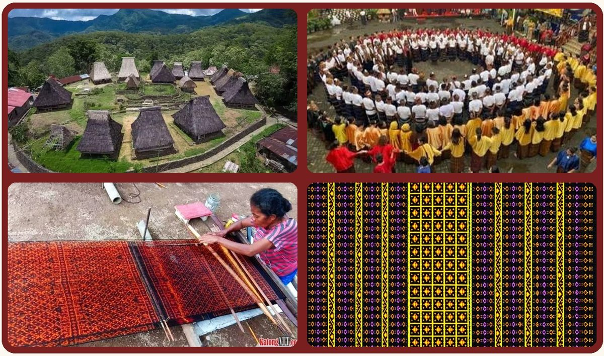
Penyusun: Gregorius Sebo Bito Program Studi S3 Ilmu Pendidikan Program Pascasarjana Universitas Pendidikan Ganesha Singaraja · 2026
Jawabanmu tersimpan otomatis di perangkat ini. Di akhir pelajaran, buka 📒 Jawabanku untuk mengirim jawaban kepada gurumu.
Kata Pengantar
Halo, anak-anak hebat kelas V! Selamat datang di E-Modul Matematika
Luas Daerah Bangun Datar. E-modul ini akan menemanimu belajar luas
daerah bangun datar dan menemukan sendiri rumus-rumusnya melalui
masalah-masalah nyata dari kehidupan dan budaya masyarakat Ende.
Di dalam e-modul ini kamu akan bertemu dengan tikar anyaman pandan,
tenun ikat Ende Lio, sawah terasering Detusoko, layang-layang buatan
anak-anak, Kampung Adat Wologai, Rumah Pengasingan Bung Karno, dan
tarian Gawi. Kamu juga akan menggunting dan menyusun ulang bangun datar
pada kertas berpetak untuk menemukan rumus luasnya. Sambil belajar
matematika, kamu akan semakin mengenal dan mencintai budaya daerahmu
sendiri.
Setiap bagian berisi lima kegiatan: Ayo Kenali Masalah, Ayo
Kumpulkan Informasi, Ayo Selidiki dan Hitung, Ayo Sajikan
Temuanmu, dan Ayo Periksa dan Refleksikan.
Melalui kegiatan-kegiatan itu, kamu akan berlatih menghubungkan
matematika dengan hal-hal di sekitarmu dan memecahkan masalah langkah
demi langkah.
Belajarlah dengan tekun, bekerja samalah dengan teman kelompokmu, dan
jangan takut mencoba. Selamat belajar!
Ende, Oktober 2026
Penyusun
Petunjuk Belajar
1. Berdoalah sebelum mulai belajar.
2. Bacalah tujuan pembelajaran dan pertanyaan pemantik pada awal
setiap bagian. Pikirkan jawabannya lebih dulu.
3. Ikuti lima kegiatan secara berurutan. Kerjakan bersama kelompokmu
dan bagilah peran dengan adil.
4. Isilah titik-titik dan tabel yang tersedia. Gunakan penggaris,
benang, atau pita ukur bila diperlukan.
5. Perhatikan lencana pada pertanyaan: lencana biru berarti kamu
sedang melatih kemampuan koneksi, lencana hijau berarti
kamu sedang melatih kemampuan pemecahan masalah.
6. Kerjakan latihan mandiri pada akhir setiap bagian, lalu isilah
refleksi dengan jujur.
Arti Lencana
Lencana
Arti
🔗 K1
Menghubungkan antarkonsep atau antartopik matematika
🔗 K2
Menghubungkan matematika dengan bidang ilmu lain (IPAS, PJOK,
Pendidikan Pancasila, SBdP)
🔗 K3
Menghubungkan matematika dengan kehidupan sehari-hari dan budaya
Ende
🧩 PM1
Memahami masalah: menentukan yang diketahui dan ditanyakan
🧩 PM2
Merencanakan penyelesaian
🧩 PM3
Melaksanakan rencana penyelesaian
🧩 PM4
Memeriksa kembali hasil dan proses
Capaian dan Tujuan Pembelajaran
Capaian Pembelajaran (Fase C)
Siswa dapat menentukan keliling dan luas berbagai bentuk bangun datar
(segitiga, segi empat, dan segi banyak) serta gabungannya (BSKAP,
2025).
Tujuan Pembelajaran
1.1 Siswa mampu memahami konsep luas sebagai banyaknya persegi satuan
yang menutupi daerah bangun datar.
1.2 Siswa mampu menemukan rumus luas persegi, persegi panjang,
segitiga, jajar genjang, trapesium, belah ketupat, dan layang-layang
melalui kegiatan memotong dan menyusun ulang bangun datar.
1.3 Siswa mampu menentukan luas daerah berbagai bangun datar dan
gabungannya untuk memecahkan masalah.
Indikator Kemampuan yang
Dilatih
Kemampuan
Indikator
Kode
Koneksi matematika (NCTM, 2000)
Mengenali dan menggunakan hubungan antarkonsep matematika
K1
Menghubungkan matematika dengan bidang ilmu lain
K2
Menerapkan matematika dalam kehidupan sehari-hari dan budaya
K3
Pemecahan masalah (Polya, 1957)
Memahami masalah
PM1
Merencanakan penyelesaian
PM2
Melaksanakan rencana
PM3
Memeriksa kembali
PM4
Peta Konsep
Luas Daerah Bangun Datar = banyak
persegi satuan yang menutupi daerah dalam (cm², m²)
Persegi, persegi panjang, segitiga
s × s
p × l
½ × a × t
Jajar genjang, trapesium
a × t
½ × (a + b) × t
Belah ketupat, layang-layang
½ × d₁ × d₂
Bangun gabungan
pecah bangun tersebut menjadi beberapa bagian yang lebih sederhana,
menghitung luas masing-masing bagian, lalu menjumlahkannya (atau
menguranginya jika ada bagian yang kosong/beririsan)
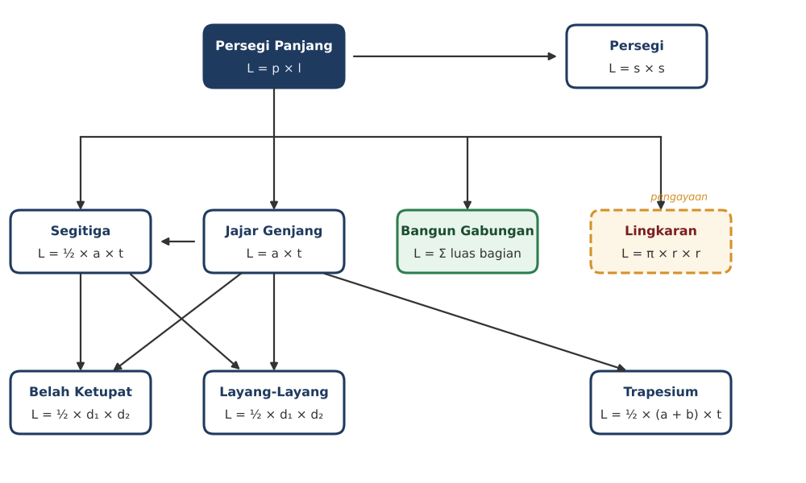
Bagan penurunan rumus luas bangun datar
Pada e-modul ini kamu akan belajar mengukur besarnya daerah di dalam
bangun datar. Kamu juga akan menemukan sendiri rumus luas berbagai
bangun datar dengan cara menggunting dan menyusun ulang bangun pada
kertas berpetak.
Bagian
Materi
Konteks kearifan lokal Ende
1
Apakah luas daerah itu?
Tikar anyaman pandan
2
Luas persegi, persegi panjang, dan segitiga
Motif kotak pada kain tenun ikat Ende Lio
3
Luas jajar genjang dan trapesium
Sawah terasering Detusoko
4
Luas belah ketupat dan layang-layang
Layang-layang buatan anak-anak dan motif belah ketupat pada tenun
ikat
5
Luas bangun gabungan
Taman Rumah Pengasingan Bung Karno
🧠Ingat Kembali
Sebutkan nama-nama bangun datar yang sudah kamu kenal!
Benda apa saja yang kamu temukan sehari-hari berbentuk bangun
datar?
Berapa hasil 12 × 8? Berapa hasil 48 : 2?
Pada sebuah meja, bagian mana yang termasuk tepi dan bagian mana
yang termasuk permukaan?
Bagian 1
Apakah Luas Daerah Itu?
🎯Tujuan Pembelajaran Bagian Ini
1. Menjelaskan arti luas daerah sebagai banyaknya persegi satuan yang
menutupi daerah di dalam bangun datar.
2. Membedakan daerah dalam (permukaan) dengan garis tepi bangun
datar.
3. Menentukan luas dengan menghitung persegi satuan dan menyatakannya
dalam satuan luas (cm², m²).
💭Mari Berpikir Dulu
🔗Pertanyaan pemantik koneksi
Jika kita ingin menutupi seluruh permukaan
tikar, yang kita hitung tepinya atau isinya?
🔗 K1
Anyaman tikar pandan membentuk petak-petak kecil. Bagaimana
petak-petak itu dapat membantu kita mengukur besar tikar?
🔗 K3
🧩Pertanyaan pemantik pemecahan masalah
Dua tikar berbeda ukurannya. Bagaimana caramu memastikan tikar
mana yang dapat diduduki lebih banyak orang? 🧩 PM2
Di kampung-kampung di Kabupaten Ende, para mama terampil
menganyam tikar dari daun pandan. Daun pandan dijemur,
dibelah menjadi pita-pita kecil, lalu dianyam silang-menyilang. Tikar
dipakai sebagai alas duduk saat keluarga berkumpul, saat acara adat,
atau untuk menjemur hasil kebun.
Mama Agustina menganyam dua tikar. Anyaman setiap tikar membentuk
petak-petak persegi yang sama besar, yaitu 10 cm × 10 cm. Tikar A
berukuran 8 petak × 6 petak, sedangkan Tikar B berukuran 7 petak × 7
petak.
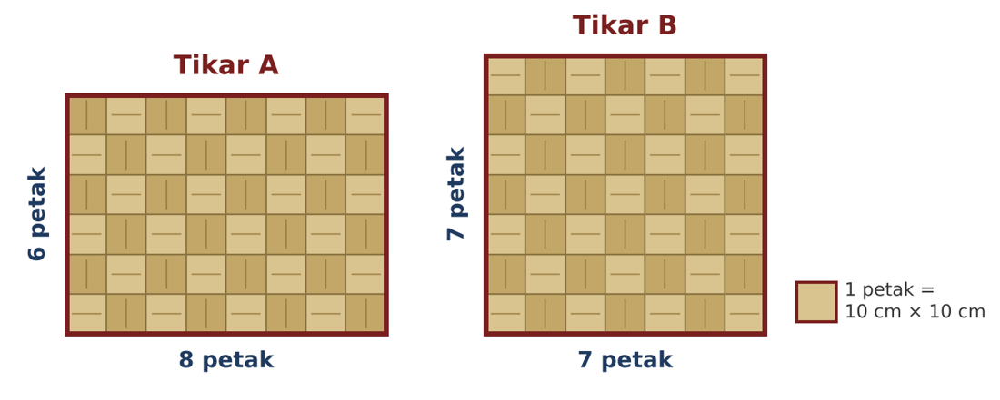
Gambar 1.1.1 Dua tikar anyaman pandan dengan petak-petak
persegi
❓Masalah Kita
a. Tikar mana yang lebih luas sehingga dapat
diduduki lebih banyak orang?
b. Berapa cm² luas setiap tikar?
c. Berapa m² luas setiap tikar?
1. Apa saja yang diketahui?
🧩 PM1
2. Apa yang ditanyakan?
🧩 PM1
Kegiatan2
Ayo
Kumpulkan Informasi
Sintaks PBM 2 · Mengorganisasikan siswa untuk
belajar
Bentuklah kelompok 4–5 orang. Bagi peran: pengukur/pembaca
gambar, pencatat, penghitung,
dan juru bicara. Seperti para penari Gawi yang
bergandengan tangan, setiap anggota kelompok penting untuk menyelesaikan
masalah bersama.
🏝️Jelajah Budaya Ende: Kotak-Kotak Motif pada Tenun
Pada beberapa kain tenun ikat Ende Lio, motif ditenun di dalam
kotak-kotak persegi yang tersusun rapi dalam baris dan
kolom, seperti petak-petak pada tikar. Di antara bidang-bidang motif
juga terdapat pita bermotif segitiga yang berjajar.
🔗 K3
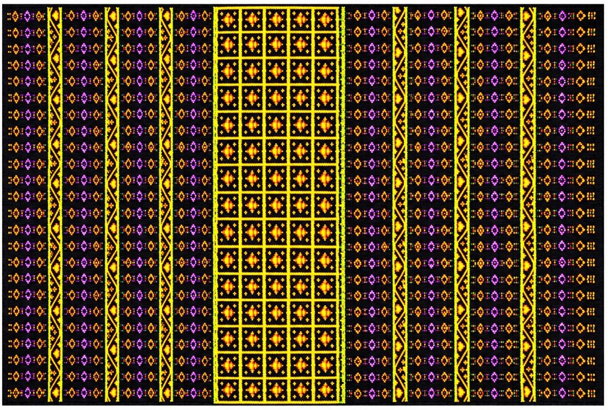
Gambar 1.1.2 Pola kain tenun dengan bidang kotak-kotak motif di
bagian tengah
1. Perhatikan bidang kotak-kotak di bagian tengah kain. Ada berapa
baris dan berapa kolom kotak motif? baris dan kolom.
2. Jika setiap kotak motif dianggap satu persegi satuan, berapa luas
bidang tengah itu? Tuliskan cara cepatmu menghitung tanpa membilang satu
per satu. 🔗 K1
3. Dalam cerita ini, luas satu kotak motif adalah 16 cm². Berapa cm²
luas seluruh bidang kotak-kotak itu? 🧩 PM3
4. Ada berapa pita bermotif segitiga pada kain itu? Mengapa pita-pita
itu tidak dihitung sebagai bagian dari luas bidang kotak-kotak?
🔗 K1
💡Info Penting
Luas daerah adalah ukuran besarnya permukaan di
dalam garis tepi bangun datar. Luas dapat diukur dengan menghitung
banyaknya persegi satuan yang tepat menutupi daerah
itu.
Persegi satuan berukuran 1 cm × 1 cm memiliki luas 1
cm² (dibaca: satu sentimeter persegi). Persegi berukuran 1 m ×
1 m memiliki luas 1 m². Ingat: 1 m² = 100 cm × 100 cm =
10.000 cm².
Luas selalu dinyatakan dengan satuan luas, misalnya
cm² dan m², bukan cm atau m.
Coba rasakan. Letakkan buku tulismu di atas kertas
berpetak. Hitung berapa petak yang tertutup oleh buku. Itulah luas buku
dalam satuan petak.
1. Menghitung petak satu per satu memakan waktu. Operasi hitung apa
yang lebih cepat jika petak tersusun dalam baris dan kolom?
🔗 K1
2. Tuliskan rencanamu untuk membandingkan kedua tikar.
🧩 PM2
Kegiatan3
Ayo
Selidiki dan Hitung
Sintaks PBM 3 · Membimbing penyelidikan individu dan
kelompok
Lengkapi tabel berikut. 🧩 PM3
Tikar
Petak mendatar
Petak tegak
Banyak petak
Luas (cm²)
A
8
6
8 × 6 =
× 100 =
B
7
7
× =
× 100 =
a. Tikar yang lebih luas adalah tikar , karena
petak > petak.
b. Satu petak = 10 cm × 10 cm = 100 cm². Luas Tikar
A = cm²; luas Tikar B = cm². Ubahlah ke m²: cm² =
m². 🔗 K1
c. Luas Tikar A = m² dan luas Tikar B = m². Selisih luas kedua tikar = cm².
🔗 K1
Kegiatan4
Ayo
Sajikan Temuanmu
Sintaks PBM 4 · Mengembangkan dan menyajikan hasil
karya
Buatlah tikar mini dari kertas berpetak atau anyaman kertas warna.
Arsir daerah dalamnya untuk menunjukkan luas. Presentasikan hasil
Kegiatan 3.
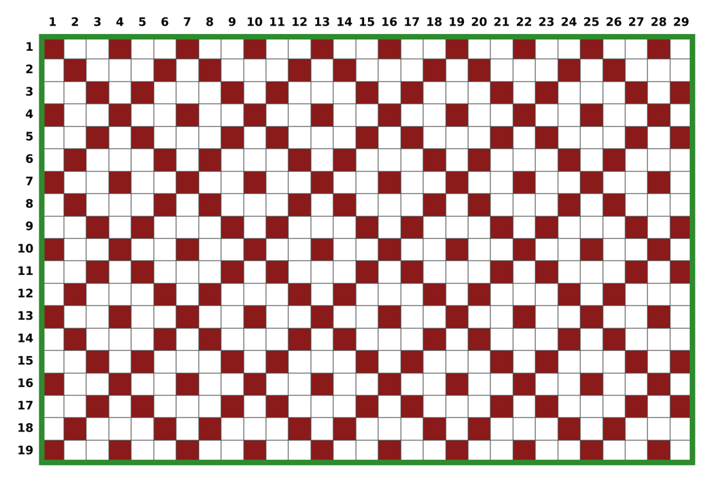
Gambar 1.1.3 Contoh pola anyaman tikar pada kertas berpetak
(diadaptasi dari gambaranyaman.blogspot.com)
Gunakan pola anyaman pada Gambar 1.1.3 sebagai contoh rancangan tikar
minimu.
1. Pada pelajaran Seni Rupa, kamu membuat mosaik dari potongan kertas
persegi. Bagaimana konsep persegi satuan membantu memperkirakan banyak
potongan kertas yang diperlukan? 🔗 K2
2. Perhatikan Gambar 1.1.3. Ada berapa petak pada satu baris dan ada
berapa baris? Berapa petak yang menyusun seluruh pola anyaman itu?
🔗 K1
3. Pada baris ke-1, ada berapa petak berwarna merah? Jika setiap
petak berukuran 1 cm × 1 cm, berapa cm² luas seluruh tikar mini itu?
🧩 PM3
Kegiatan5
Ayo
Periksa dan Refleksikan
Sintaks PBM 5 · Menganalisis dan mengevaluasi proses pemecahan
masalah
Periksa banyak petak dengan cara lain, misalnya menghitung per
baris lalu menjumlahkan: 8 + 8 + 8 + 8 + 8 + 8 = Apakah sama
dengan 8 × 6? 🧩 PM4
Periksa satuanmu: apakah luas ditulis dalam cm² atau m²?
🧩 PM4
⚠️Awas, Keliru!
Seorang siswa menulis “luas Tikar A = 4.800 cm”. Apa yang keliru?
Jelaskan!
🪞Refleksiku
Dengan kalimatmu sendiri, apa arti luas daerah?
Bagian mana yang paling mudah dan paling sulit bagimu hari ini?
Mengapa?
⭐ Latihan
Mandiri
1. Lantai sebuah ruang kelas tertutup ubin yang tersusun 9 ubin
mendatar dan 7 ubin ke belakang. Berapa ubin yang menutupi lantai
itu?
2. Setiap ubin pada soal nomor 1 berukuran 20 cm × 20 cm. Berapa cm²
luas lantai kelas itu?
3. Gambarlah pada kertas berpetak tiga persegi panjang berbeda yang
masing-masing luasnya 12 petak!
Bagian 2
Luas Persegi, Persegi Panjang, dan Segitiga
🎯Tujuan Pembelajaran Bagian Ini
1. Menemukan rumus luas persegi dan persegi panjang dari persegi
satuan.
2. Menemukan rumus luas segitiga dari persegi panjang yang dibagi
oleh diagonal.
3. Menggunakan luas persegi, persegi panjang, dan segitiga untuk
memecahkan masalah.
💭Mari Berpikir Dulu
🔗Pertanyaan pemantik koneksi
Jika sebuah persegi panjang dipotong mengikuti diagonalnya,
terbentuk dua segitiga yang sama. Apa hubungan luas segitiga dengan luas
persegi panjang? 🔗 K1
Sebelum menenun, para mama merancang motif dan memperkirakan
banyak benang yang diperlukan. Mengapa luas kain perlu diketahui lebih
dahulu? 🔗 K3
🧩Pertanyaan pemantik pemecahan masalah
Pada segitiga, ukuran mana yang disebut tinggi? Bagaimana kamu
memastikan tinggi yang kamu pakai sudah benar?
🧩 PM2
▶
Ayo Tonton Video
mama menenun kain ikat Ende Lio
Video segera ditambahkan oleh guru.
Kegiatan1
Ayo
Kenali Masalah
Sintaks PBM 1 · Orientasi siswa pada masalah
Kain tenun ikat Ende Lio ditenun oleh para mama di rumah dengan alat
tenun tradisional. Sebelum menenun, penenun merancang motif dan
memperkirakan banyak benang yang diperlukan. Menenun menjadi salah satu
sumber penghidupan keluarga sekaligus cara menjaga warisan leluhur.
Mama Theresia menenun kain dengan bidang motif kotak-kotak di bagian
tengahnya, seperti kain pada Gambar 1.1.2. Bidang motif kotak itu
berbentuk persegi panjang berukuran 60 cm × 20 cm. Mama Theresia ingin
membagi bidang motif itu dengan garis dari satu pojok ke pojok yang
berseberangan: daerah A ditenun dengan benang berwarna merah, sedangkan
daerah B tetap berwarna kuning. Dalam cerita ini, setiap 100 cm² daerah
A memerlukan 1 gulung benang merah.
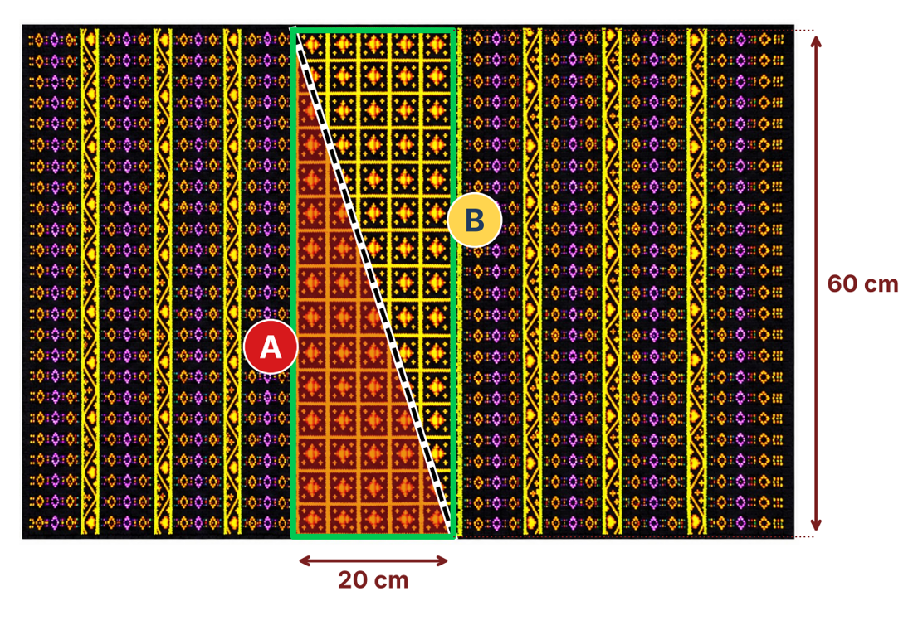
Gambar 1.2.1 Bidang motif kotak pada kain tenun yang dibagi dua
oleh garis diagonal
❓Masalah Kita
a. Berapa cm² luas seluruh bidang motif kotak?
b. Berapa cm² luas daerah A?
c. Berapa gulung benang merah yang
diperlukan?
1. Tuliskan yang diketahui dan yang ditanyakan.
🧩 PM1
Kegiatan2
Ayo
Kumpulkan Informasi
Sintaks PBM 2 · Mengorganisasikan siswa untuk
belajar
Bentuklah kelompok 4–5 orang. Bagi peran: pengukur/pembaca
gambar, pencatat, penghitung,
dan juru bicara. Seperti para penari Gawi yang
bergandengan tangan, setiap anggota kelompok penting untuk menyelesaikan
masalah bersama.
✂️Ayo Temukan Rumus 1: Luas Persegi Panjang dan Persegi
Siapkan kertas berpetak, gunting, dan beberapa persegi satuan dari
kertas warna. 🔗 K1
1. Perhatikan persegi panjang dan persegi satuan pada Gambar
1.2.2.
2. Tutuplah persegi panjang itu dengan persegi satuan yang
tersedia.
3. Berapa persegi satuan yang dapat menutupi daerah persegi panjang
tersebut? persegi satuan.
4. Sekarang tutuplah sebagian saja, yaitu satu baris dan satu
kolom.
5. Banyak persegi satuan pada satu baris (banyak kolom) = Banyak baris =
6. Dengan cara apa kamu dapat menghitung luas persegi panjang tanpa
menghitung petak satu per satu?
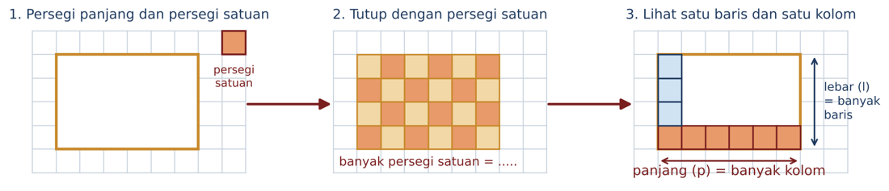
Gambar 1.2.2 Menutup persegi panjang dengan persegi
satuan
7. Perhatikan Gambar 1.2.3. Setiap petak adalah satu persegi satuan.
Bilangan di atas menunjukkan urutan kolom, dan bilangan di kiri
menunjukkan urutan baris.
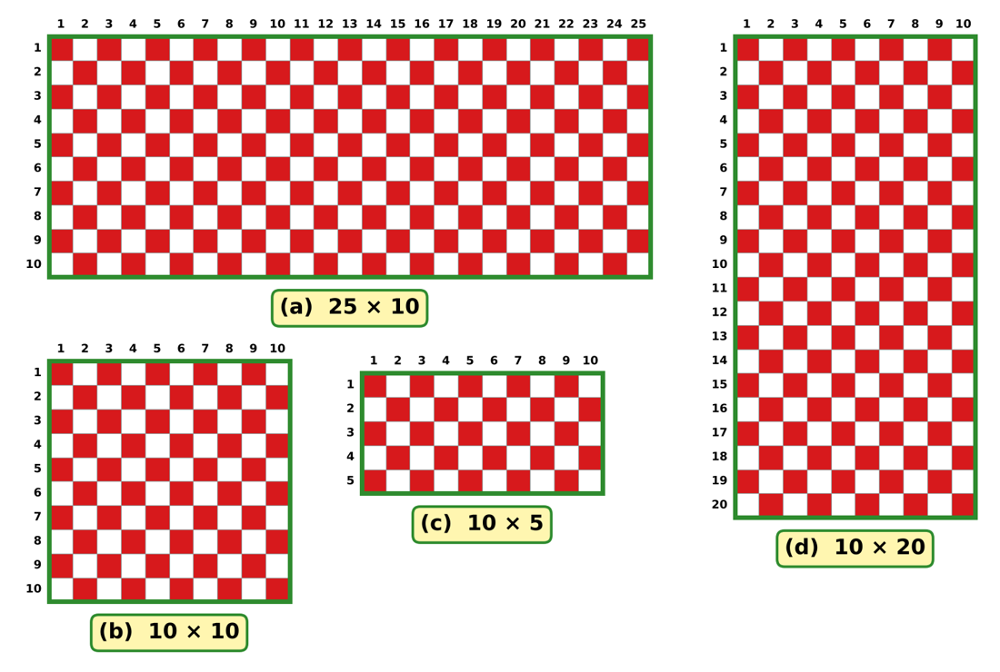
Gambar 1.2.3 Empat bangun yang tersusun atas petak-petak persegi
satuan
8. Tentukan luas setiap bangun dengan mengalikan banyak kolom dan
banyak baris: (a) 25 × 10 = , (b) 10 × 10 = , (c) 10 × 5 =
, dan (d) 10 × 20 = persegi satuan.
🔗 K1
9. Bangun manakah yang berbentuk persegi? Bangun manakah yang luasnya
paling besar? 🧩 PM2
10. Perhatikan Gambar 1.2.4. Persegi panjang (a), (b), dan (c) dibuat
petak-petak berbentuk persegi, lalu setiap petak diberi nomor.
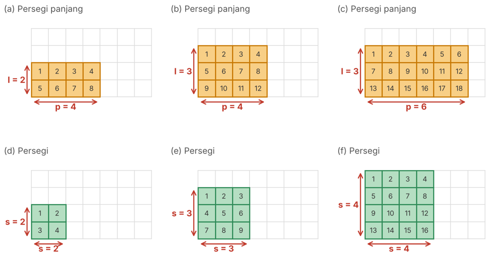
Gambar 1.2.4 Pola banyak petak pada persegi panjang dan
persegi
11. Lengkapi pola pada persegi panjang: (a) p = 4, l = 2, banyak
petak = = × ; (b) p = 4, l = 3, banyak petak = =
× ; (c) p = 6, l = 3, banyak petak = = × 🔗 K1
12. Lengkapi pola pada persegi: (d) s = 2, banyak petak = =
× ; (e) s = 3, banyak petak = = × ; (f) s
= 4, banyak petak = = × 🔗 K1
13. Dari pola itu, banyak petak selalu sama dengan hasil kali dan 🧩 PM4
Kesimpulan
Jika banyak kolom adalah p (panjang) dan banyak
baris adalah l (lebar), maka luas persegi panjang: L =
×
Persegi adalah persegi panjang yang panjang dan lebarnya sama, yaitu
s. Jadi, luas persegi: L = ×
▶
Video Animasi
Luas Persegi Panjang dan Persegi
Video segera ditambahkan oleh guru.
✂️Ayo Temukan Rumus 2: Luas Segitiga
Cara 1: Memotong segitiga pada ½ tinggi
1. Gambarlah sebuah segitiga sembarang dengan alas dan tinggi
sembarang pada kertas berpetak, lalu guntinglah menurut
sisi-sisinya.
2. Tentukan sisi alas (a) dan tinggi (t) segitiga itu.
3. Potong segitiga menurut garis ½ tinggi. Bangun apa saja yang
terbentuk?
4. Potong segitiga kecil di bagian atas menurut garis tingginya.
Bangun apa saja yang terbentuk?
5. Susunlah potongan-potongan itu menjadi persegi panjang seperti
Gambar 1.2.5.
6. Ternyata luas segitiga = luas
7. Panjang persegi panjang = segitiga, dan lebar persegi
panjang = tinggi segitiga.
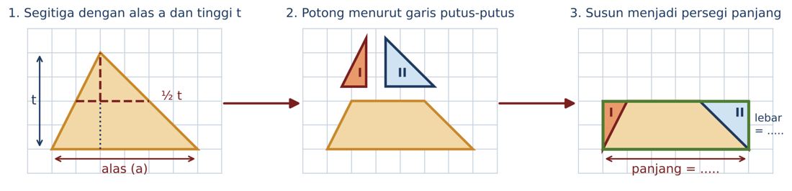
Gambar 1.2.5 Segitiga dipotong pada ½ tinggi lalu disusun menjadi
persegi panjang
Kesimpulan: Karena luas persegi panjang L = p × l,
maka luas segitiga L = ×
▶
Video Animasi
Luas Segitiga – Cara 1: Memotong segitiga pada ½
tinggi
Video segera ditambahkan oleh guru.
Cara 2: Menyusun dua segitiga siku-siku yang
kongruen
Perhatikan penari Gawi pada Gambar 1.2.6. Selendang
tenun ikat yang mereka pakai pada mulanya berbentuk persegi
panjang. Ketika menari, selendang itu dilipat menjadi dua
menurut garis diagonalnya sehingga tampak berbentuk
segitiga. 🔗 K3
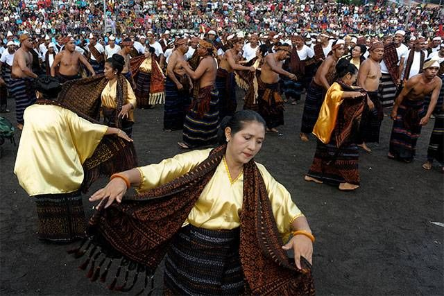
Gambar 1.2.6 Penari Gawi dari Ende mengenakan selendang tenun
ikat
Jika sebuah selendang persegi panjang dibagi dua menurut diagonalnya,
terbentuk dua segitiga yang sama besar. Bagaimana luas setiap segitiga
dibandingkan dengan luas selendang semula? 🔗 K1
Mari buktikan dengan kegiatan berikut.
1. Gambarlah dua segitiga siku-siku yang kongruen
(sama bentuk dan ukurannya) pada kertas berpetak, lalu guntinglah.
2. Tentukan sisi alas (a) dan tinggi (t) segitiga.
3. Susunlah kedua segitiga sehingga membentuk persegi panjang seperti
Gambar 1.2.7.
4. Alas segitiga = persegi panjang, dan tinggi segitiga = persegi panjang.
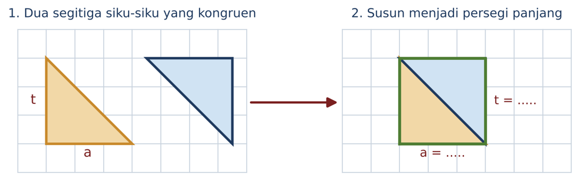
Gambar 1.2.7 Dua segitiga siku-siku yang kongruen membentuk
persegi panjang
Kesimpulan: Luas dua segitiga = luas persegi panjang
= a × t. Jadi, luas satu segitiga L = × (a × t).
▶
Video Animasi
Luas Segitiga – Cara 2: Menyusun dua segitiga siku-siku
yang kongruen
Video segera ditambahkan oleh guru.
Bandingkan hasil Cara 1 dan Cara 2. Apakah rumus yang kamu peroleh
sama? Mengapa? 🔗 K1
Bangun
Asal rumus
Luas (L)
Persegi
Ada s baris, setiap baris berisi s persegi satuan
L = s × s
Persegi panjang
Ada l baris, setiap baris berisi p persegi satuan
L = p × l
Segitiga
Persegi panjang dibagi diagonal menjadi 2 segitiga sama besar; alas
= p, tinggi = l
L = ½ × a × t = a × t : 2
💡Info Penting
Tinggi segitiga adalah garis yang tegak
lurus (membentuk sudut siku-siku) terhadap alas, ditarik dari
titik puncak. Sisi miring bukan tinggi, kecuali pada segitiga siku-siku
tinggi berimpit dengan sisi tegaknya.
📘Ayo Pelajari Contoh
Contoh 1. Persegi panjang ABCD memiliki panjang 15
cm dan lebar 4 cm. Hitunglah luasnya!
Penyelesaian:
Luas persegi panjang ABCD = p × l
= 15 cm × 4 cm
= 60 cm²
Contoh 2. Luas persegi panjang KLMN adalah 48 cm².
Jika panjangnya 12 cm, berapa lebarnya?
Penyelesaian:
Luas = p × l, sehingga 48 = 12 × l
l = 48 : 12
l = 4 cm
Contoh 3. Persegi ABCD memiliki panjang sisi 12 cm.
Hitunglah luasnya!
Penyelesaian:
Luas persegi ABCD = s × s
= 12 cm × 12 cm
= 144 cm²
Contoh 4. Luas sebuah persegi adalah 169 cm². Berapa
panjang sisinya?
Penyelesaian:
Luas = s × s, sehingga s × s = 169
Bilangan yang dikalikan dengan dirinya sendiri hasilnya 169 adalah
13, karena 13 × 13 = 169.
Jadi, s = 13 cm
1. Ambil kertas berbentuk persegi panjang, guntinglah mengikuti
diagonalnya, lalu tumpuk kedua segitiga. Apa yang kamu temukan? Mengapa
rumus luas segitiga memakai ½? 🔗 K1
2. Pada segitiga daerah A, sisi mana yang menjadi alas dan sisi mana
yang menjadi tinggi? 🧩 PM2
Kegiatan3
Ayo
Selidiki dan Hitung
Sintaks PBM 3 · Membimbing penyelidikan individu dan
kelompok
Selesaikan langkah berikut.
🧩 PM3
a. Luas bidang motif = p × l = × = cm².
b. Daerah A berbentuk segitiga siku-siku dengan alas
cm dan tinggi cm. Luas = ½ × × = cm².
c. Benang merah yang diperlukan = cm² : 100
cm² × 1 gulung = gulung.
Bandingkan: luas daerah A + luas daerah B = + = cm². Apakah sama dengan luas bidang motif?
🔗 K1
🏆Tantangan Kelompok
Mama Theresia juga akan menenun selendang berbentuk persegi dengan
sisi 50 cm yang seluruhnya bermotif merah. Berapa cm² luasnya dan berapa
gulung benang merah yang diperlukan?
Kegiatan4
Ayo
Sajikan Temuanmu
Sintaks PBM 4 · Mengembangkan dan menyajikan hasil
karya
Sajikan gambar bidang motif kotak, garis diagonal, ukuran alas dan
tinggi, serta perhitungan luasnya pada lembar kerja kelompok. Juru
bicara menjelaskan asal-usul rumus luas segitiga.
1. Benang tenun ikat Ende Lio dapat diwarnai dengan pewarna alami
dari tumbuhan, misalnya akar mengkudu untuk warna merah dan daun tarum
untuk warna biru. Kaitkan dengan pelajaran IPAS: bagian tumbuhan apa
saja yang dapat dimanfaatkan manusia? 🔗 K2
2. Mengapa tenun ikat perlu dilestarikan dan diwariskan kepada
generasi muda? 🔗 K3
Kegiatan5
Ayo
Periksa dan Refleksikan
Sintaks PBM 5 · Menganalisis dan mengevaluasi proses pemecahan
masalah
Periksa: luas daerah A harus tepat setengah dari luas bidang
motif. Apakah jawabanmu demikian? 🧩 PM4
Periksa satuan: apakah semua luas ditulis dalam m²?
🧩 PM4
⚠️Awas, Keliru!
Seorang siswa menghitung luas daerah A = 60 × 20 = 1.200 cm². Langkah
apa yang terlupa?
🪞Refleksiku
Mengapa luas segitiga sama dengan setengah luas persegi panjang
yang alas dan tingginya sama?
Bagian mana yang paling mudah dan paling sulit bagimu hari ini?
Mengapa?
🏝️Jelajah Budaya Ende: Tenun Ikat Ende Lio
Tenun ikat Ende Lio ditenun oleh para mama dengan alat tenun
tradisional. Sarung tenun untuk perempuan disebut lawo.
Jika dibentangkan, kain tenun berbentuk persegi panjang dan terbagi
menjadi beberapa bidang motif. 🔗 K3
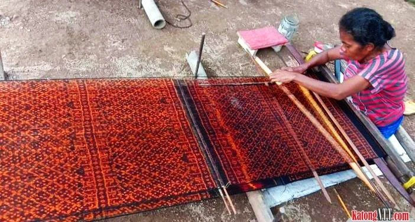
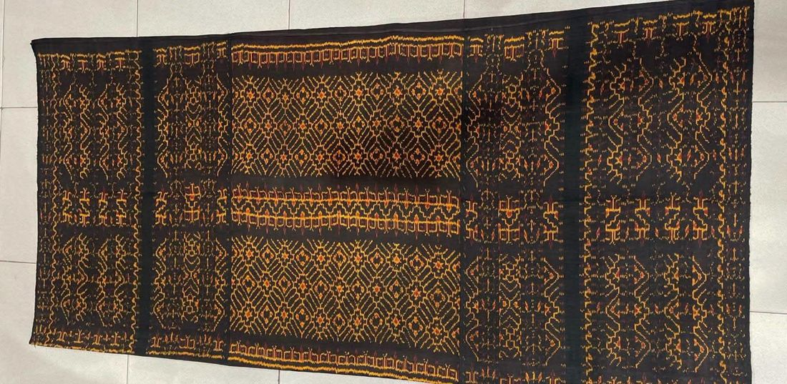
Gambar 1.2.8 Mama menenun kain ikat (kiri, sumber: KatongNTT.com)
dan lawo yang dibentangkan (kanan)
1. Dalam cerita ini, sehelai lawo yang dibentangkan berukuran 160 cm
× 70 cm. Berapa cm² luas kain itu? 🧩 PM3
2. Bidang motif di bagian tengah kain berbentuk persegi panjang
berukuran 60 cm × 70 cm. Berapa cm² luasnya? Berapa bagian (dalam bentuk
pecahan) dari luas seluruh kain yang ditempati bidang tengah itu?
🔗 K1
⭐ Latihan
Mandiri
1. Hitunglah luas persegi yang panjang sisinya 15 cm!
2. Sebuah segitiga memiliki alas 14 cm dan tinggi 9 cm. Berapa
luasnya?
3. Luas sebuah persegi panjang 96 cm². Jika panjangnya 12 cm, berapa
lebarnya?
Bagian 3
Luas Jajar Genjang dan Trapesium
🎯Tujuan Pembelajaran Bagian Ini
1. Menemukan rumus luas jajar genjang dan trapesium dengan cara
memotong dan menyusun ulang bangun.
2. Menggunakan rumus luas tersebut untuk memecahkan masalah.
💭Mari Berpikir Dulu
🔗Pertanyaan pemantik koneksi
Jika ujung jajar genjang dipotong lalu dipindahkan ke sisi
seberangnya, bangun apa yang terbentuk? Apa artinya bagi rumus luasnya?
🔗 K1
Petak sawah di lereng bukit Detusoko tidak selalu berbentuk
persegi panjang. Mengapa petani perlu mengetahui luas setiap petak?
🔗 K3
🧩Pertanyaan pemantik pemecahan masalah
Bagaimana kamu menghitung luas petak sawah berbentuk trapesium,
padahal kamu baru mengenal rumus luas persegi panjang dan segitiga?
🧩 PM2
▶
Ayo Tonton Video
sawah terasering di Detusoko
Video segera ditambahkan oleh guru.
Kegiatan1
Ayo
Kenali Masalah
Sintaks PBM 1 · Orientasi siswa pada masalah
Di Detusoko, Kabupaten Ende, sawah dibuat
bertingkat-tingkat mengikuti lereng bukit. Sawah bertingkat atau
terasering ini dialiri air dari mata air pegunungan dan
menjadi pemandangan khas dataran tinggi Ende. Karena mengikuti bentuk
bukit, petak-petaknya sering berbentuk trapesium atau jajar genjang.
Pak Lukas memiliki dua petak sawah. Petak A berbentuk trapesium
dengan sisi sejajar 14 m dan 10 m serta tinggi 6 m. Petak B berbentuk
jajar genjang dengan alas 12 m dan tinggi 5 m. Dalam cerita ini, setiap
1 m² sawah ditanami 16 rumpun padi.
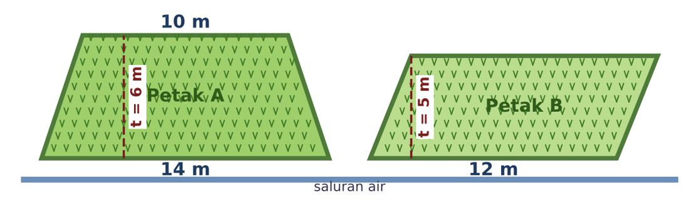
Gambar 1.3.1 Petak sawah terasering berbentuk trapesium dan jajar
genjang
❓Masalah Kita
a. Berapa m² luas Petak A dan Petak B?
b. Berapa m² luas sawah Pak Lukas seluruhnya?
c. Berapa rumpun padi yang dapat ditanam di kedua
petak?
1. Tuliskan yang diketahui dan yang ditanyakan.
🧩 PM1
Kegiatan2
Ayo
Kumpulkan Informasi
Sintaks PBM 2 · Mengorganisasikan siswa untuk
belajar
Bentuklah kelompok 4–5 orang. Bagi peran: pengukur/pembaca
gambar, pencatat, penghitung,
dan juru bicara. Seperti para penari Gawi yang
bergandengan tangan, setiap anggota kelompok penting untuk menyelesaikan
masalah bersama.
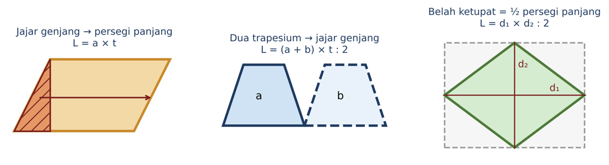
Gambar 1.3.2 Asal-usul rumus luas jajar genjang, trapesium, dan
belah ketupat
✂️Ayo Temukan Rumus 3: Luas Jajar Genjang
Cara 1: Memotong menurut garis tinggi
1. Gambarlah sebuah jajar genjang dengan alas 6 satuan dan tinggi 4
satuan pada kertas berpetak, lalu guntinglah.
2. Hitunglah jumlah petak pada jajar genjang itu (petak yang
terpotong boleh digabungkan)petak.
3. Potonglah menurut garis tinggi sehingga menjadi dua bangun
datar.
4. Pindahkan potongan segitiga ke sisi seberangnya sehingga terbentuk
persegi panjang seperti Gambar 1.3.3.
5. Alas jajar genjang menjadi sisi persegi panjang, dan tinggi
jajar genjang menjadi sisi persegi panjang.
6. Dengan rumus luas persegi panjang, jumlah petak pada jajar genjang
= × = persegi satuan. Apakah sama dengan hasil langkah
2? 🧩 PM4
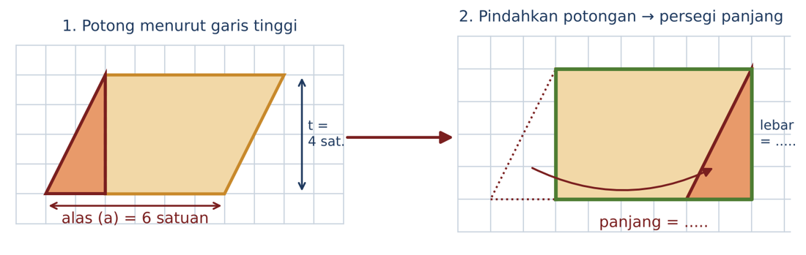
Gambar 1.3.3 Jajar genjang dipotong menurut garis tinggi lalu
disusun menjadi persegi panjang
Kesimpulan: L persegi panjang = p × l, sehingga L
jajar genjang = ×
▶
Video Animasi
Luas Jajar Genjang – Cara 1: Memotong menurut garis
tinggi
Video segera ditambahkan oleh guru.
Cara 2: Memotong menurut diagonal
1. Gambarlah jajar genjang lain, lalu potonglah menurut salah satu
garis diagonalnya.
2. Bangun apa yang terbentuk? Apakah kedua bangun itu sama besar?
3. Ternyata luas jajar genjang = × luas segitiga = 2 × ½ × (a ×
t) =
▶
Video Animasi
Luas Jajar Genjang – Cara 2: Memotong menurut
diagonal
Video segera ditambahkan oleh guru.
🔗Ayo Hubungkan: Luas Segitiga dari Luas Jajar Genjang
1. Gambarlah dua segitiga yang kongruen dengan alas 4 satuan dan
tinggi 3 satuan, lalu guntinglah.
2. Gabungkan kedua segitiga sehingga berbentuk jajar genjang seperti
Gambar 1.3.4.
3. Alas segitiga sama dengan jajar genjang, dan tinggi segitiga
sama dengan jajar genjang.
4. Karena rumus luas jajar genjang adalah , maka luas dua
segitiga L = dan luas satu segitiga L =
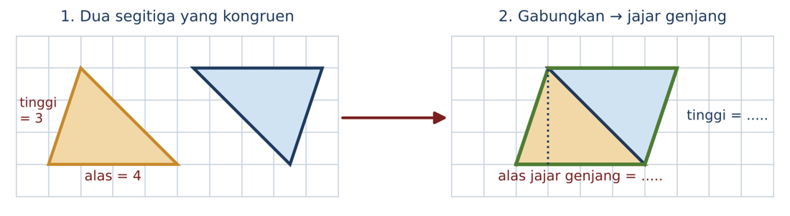
Gambar 1.3.4 Dua segitiga yang kongruen membentuk jajar
genjang
Apakah hasilnya sama dengan rumus luas segitiga yang kamu temukan di
Bagian 2? 🔗 K1
▶
Video Animasi
Luas Segitiga dari Luas Jajar Genjang
Video segera ditambahkan oleh guru.
✂️Ayo Temukan Rumus 4: Luas Trapesium
Cara 1: Mengubah persegi panjang berpetak menjadi
trapesium
1. Gambarlah persegi panjang dengan panjang 4 satuan dan lebar 3
satuan pada kertas berpetak, lalu guntinglah. Luasnya = p × l = ×
= persegi satuan.
2. Tandai titik tengah sisi kiri dan sisi kanan. Dari titik itu,
guntinglah segitiga kecil di sudut kiri atas dan sudut kanan atas (lihat
garis putus-putus pada Gambar 1.3.5).
3. Putar setiap segitiga setengah putaran pada titik tengah sisi,
lalu tempelkan di sudut bawah sehingga terbentuk trapesium.
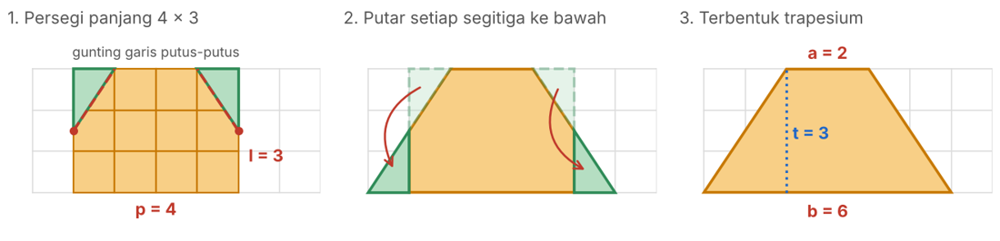
Gambar 1.3.5 Persegi panjang berpetak dipotong lalu disusun
menjadi trapesium
4. Sisi sejajar atas a = satuan, sisi sejajar bawah b = satuan, dan tinggi t = satuan.
5. Tidak ada kertas yang dibuang, maka luas trapesium = luas persegi
panjang = persegi satuan. 🔗 K1
6. Hitunglah (a + b) : 2 = (+ ) : 2 = Ternyata
hasilnya sama dengan persegi panjang, sedangkan tinggi trapesium
sama dengan persegi panjang.
7. Periksa: 12 = (+ ) × : 2. Apakah benar?
🧩 PM4
Kesimpulan: L persegi panjang = p × l, maka L
trapesium = (jumlah sisi sejajar : 2) × tinggi = ½ × (+ ) ×
Sebaliknya, sebuah trapesium juga dapat dipotong pada titik tengah
kedua kakinya, lalu potongan kecilnya dipindah sehingga menjadi persegi
panjang.
▶
Video Animasi
Luas Trapesium – Cara 1: Dari persegi panjang berpetak
menjadi trapesium
Video segera ditambahkan oleh guru.
Cara 2: Memotong trapesium pada ½ tinggi
1. Gambarlah sebuah trapesium dengan sisi sejajar a = 3 satuan dan b
= 6 satuan serta tinggi 4 satuan, lalu guntinglah.
2. Hitunglah jumlah petak pada trapesium itupetak.
3. Potonglah di antara kedua sisi sejajar, tepat pada ½ tinggi,
sehingga menjadi dua trapesium kecil.
4. Putar potongan atas, lalu letakkan di samping potongan bawah
sehingga terbentuk jajar genjang seperti Gambar 1.3.6.
5. Sisi a dan sisi b disebut sepasang sisi sejajar
trapesium. Sekarang keduanya menjadi sisi jajar genjang, yaitu (a
+ b), dan ½ tinggi trapesium menjadi jajar genjang.
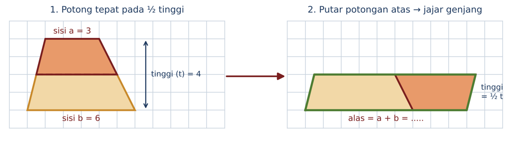
Gambar 1.3.6 Trapesium dipotong pada ½ tinggi lalu disusun
menjadi jajar genjang
Kesimpulan: L jajar genjang = a × t, maka L
trapesium = jumlah sisi sejajar × ½ tinggi = ×
▶
Video Animasi
Luas Trapesium – Cara 2: Memotong trapesium pada ½
tinggi
Video segera ditambahkan oleh guru.
Cara 3: Menggabungkan dua trapesium yang
kongruen
1. Gambarlah dua trapesium yang kongruen dengan sisi a = 2 satuan,
sisi b = 5 satuan, dan tinggi 3 satuan, lalu guntinglah.
2. Gabungkan kedua trapesium sehingga berbentuk jajar genjang seperti
Gambar 1.3.7.
3. Sisi sejajar a dan b sekarang bergabung menjadi sisi jajar
genjang, dan tinggi jajar genjang = trapesium.
4. Luas dua trapesium = × Jadi, luas satu trapesium =
× ×
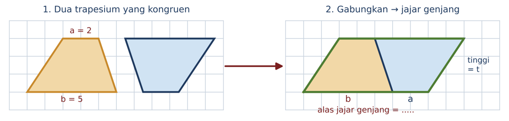
Gambar 1.3.7 Dua trapesium yang kongruen membentuk jajar
genjang
Bandingkan rumus dari Cara 1, Cara 2, dan Cara 3. Apakah hasilnya
sama? 🔗 K1
Tantangan: Pada trapesium siku-siku, Cara 2 dan Cara
3 menghasilkan persegi panjang. Cobalah, lalu periksa apakah rumusnya
tetap sama! 🧩 PM4
▶
Video Animasi
Luas Trapesium – Cara 3: Menggabungkan dua trapesium
yang kongruen
Video segera ditambahkan oleh guru.
💡Info Penting
Rumus-rumus luas saling berhubungan. Dari persegi
panjang kita menemukan rumus luas jajar genjang dan trapesium.
Dari jajar genjang kita juga dapat menemukan rumus luas
segitiga dan trapesium. Jadi, cukup ingat rumus luas persegi panjang,
maka rumus lainnya dapat kamu temukan kembali. 🔗 K1
Bangun
Asal rumus
Luas (L)
Jajar genjang
Potong segitiga menurut garis tinggi, pindahkan ke ujung lain →
persegi panjang (panjang = alas, lebar = tinggi)
L = a × t
Trapesium
Dipotong dan disusun → persegi panjang dengan panjang (a + b) : 2
dan lebar t; dapat juga dua trapesium yang sama → jajar genjang dengan
alas (a + b)
L = ½ × (a + b) × t
📘Ayo Pelajari Contoh
Contoh 1. Jajar genjang ABCD memiliki alas 13 cm dan
tinggi 4 cm. Hitunglah luasnya!
Penyelesaian:
Luas jajar genjang ABCD = a × t
= 13 cm × 4 cm
= 52 cm²
Contoh 2. Jajar genjang ABCD memiliki alas AB = 5 cm
dan tinggi 20 cm. Hitunglah luasnya!
Penyelesaian:
Luas jajar genjang ABCD = a × t
= 5 cm × 20 cm
= 100 cm²
Contoh 3. Trapesium ABCD memiliki sisi sejajar AB =
14 cm dan DC = 6 cm, serta tinggi 4 cm. Hitunglah luasnya!
Penyelesaian:
Luas trapesium ABCD = ½ × (AB + DC) × t
= ½ × (14 cm + 6 cm) × 4 cm
= ½ × 20 cm × 4 cm
= 10 cm × 4 cm
= 40 cm²
1. Mengapa rumus luas trapesium dibagi 2? Hubungkan dengan rumus luas
jajar genjang. 🔗 K1
2. Tuliskan rencana penyelesaian masalah sawah Pak Lukas.
🧩 PM2
Kegiatan3
Ayo
Selidiki dan Hitung
Sintaks PBM 3 · Membimbing penyelidikan individu dan
kelompok
Lengkapi tabel berikut. 🧩 PM3
Petak
Bentuk
Perhitungan
Luas (m²)
A
Trapesium
½ × (14 + ) ×
B
Jajar genjang
×
Jumlah
+
c. Banyak rumpun padi = m² × 16 = rumpun. 🔗 K1
🏆Tantangan Kelompok
Sebuah petak sawah berbentuk trapesium luasnya 100 m² dan tingginya 8
m. Salah satu sisi sejajarnya 10 m. Berapa meter panjang sisi sejajar
yang lain? Tuliskan rencanamu lebih dahulu.
Kegiatan4
Ayo
Sajikan Temuanmu
Sintaks PBM 4 · Mengembangkan dan menyajikan hasil
karya
Peragakan asal-usul rumus dengan kertas: potong jajar genjang menjadi
persegi panjang, dan susun dua trapesium menjadi jajar genjang.
Tempelkan potongannya di karton bersama perhitungan luas sawah Pak
Lukas.
1. Terasering membantu menahan air dan tanah di lereng bukit. Kaitkan
dengan pelajaran IPAS: apa yang dapat terjadi jika lereng bukit diolah
tanpa terasering? 🔗 K2
Kegiatan5
Ayo
Periksa dan Refleksikan
Sintaks PBM 5 · Menganalisis dan mengevaluasi proses pemecahan
masalah
Periksa luas Petak A dengan cara lain: bagi trapesium menjadi
satu persegi panjang dan dua segitiga. Apakah hasilnya sama?
🧩 PM4
Periksa: apakah tinggi yang kamu pakai tegak lurus terhadap alas,
bukan sisi miring? 🧩 PM4
⚠️Awas, Keliru!
Seorang siswa menghitung luas Petak A = (14 + 10) × 6 = 144 m². Apa
yang terlupa?
🪞Refleksiku
Rumus luas mana yang paling mudah kamu ingat setelah memotong dan
menyusun kertas sendiri?
Bagian mana yang paling mudah dan paling sulit bagimu hari ini?
Mengapa?
⭐ Latihan
Mandiri
1. Sebuah jajar genjang memiliki alas 15 cm dan tinggi 8 cm.
Hitunglah luasnya!
2. Sebuah trapesium memiliki sisi sejajar 20 cm dan 12 cm serta
tinggi 7 cm. Berapa luasnya?
3. Luas sebuah jajar genjang 84 cm² dan alasnya 12 cm. Berapa
tingginya?
Bagian 4
Luas Belah Ketupat dan Layang-Layang
🎯Tujuan Pembelajaran Bagian Ini
1. Menemukan rumus luas belah ketupat dan layang-layang dengan
memotong menurut diagonal lalu menyusun ulang menjadi persegi
panjang.
2. Menjelaskan mengapa rumus luas belah ketupat dan layang-layang
sama, yaitu ½ × d₁ × d₂.
3. Menggunakan rumus luas tersebut untuk memecahkan masalah.
💭Mari Berpikir Dulu
🔗Pertanyaan pemantik koneksi
Jika belah ketupat dipotong menurut diagonalnya lalu potongannya
disusun ulang, bangun apa yang terbentuk? Apa artinya bagi rumus
luasnya? 🔗 K1
Kerangka layang-layang mainan dibuat dari dua bilah bambu yang
bersilangan. Bagian apa dari layang-layang yang ditunjukkan oleh kedua
bilah bambu itu? 🔗 K3
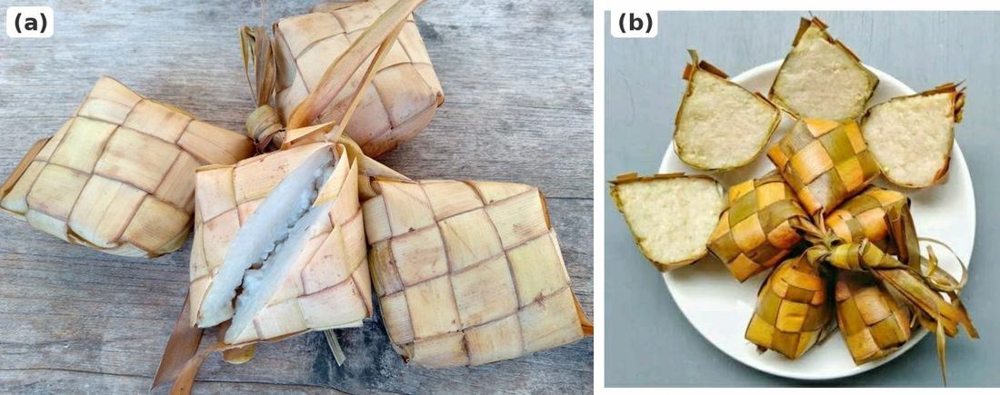
Gambar 1.4.1 Ketupat yang dianyam dari janur: (a) ketupat utuh,
(b) ketupat yang dibelah dan disajikan
Perhatikan ketupat pada Gambar 1.4.1. Jika dilihat dari depan,
ketupat berbentuk bangun datar apa? Mengapa bangun datar itu diberi nama
belah ketupat? 🔗 K3
🧩Pertanyaan pemantik pemecahan masalah
Bagaimana caramu mengetahui banyak kertas yang diperlukan untuk
menutup sebuah layang-layang?
🧩 PM2
Ibu menganyam ketupat untuk acara keluarga. Bagaimana caramu
mengetahui luas anyaman janur yang terlihat pada satu sisi ketupat?
🧩 PM2
▶
Ayo Tonton Video
anak-anak membuat dan menerbangkan
layang-layang
Video segera ditambahkan oleh guru.
Kegiatan1
Ayo
Kenali Masalah
Sintaks PBM 1 · Orientasi siswa pada masalah
Saat musim angin tiba, anak-anak di Ende senang membuat
layang-layang sendiri. Kerangkanya dibuat dari dua
bilah bambu tipis yang diikat bersilangan, lalu ditutup dengan kertas
minyak berwarna. Layang-layang diterbangkan di tanah lapang atau di tepi
pantai sambil bersenda gurau bersama teman.
Yosef dan Maria masing-masing membuat satu layang-layang.
Layang-layang Yosef berbentuk layang-layang dengan
bilah bambu 60 cm dan 40 cm. Layang-layang Maria berbentuk belah
ketupat dengan bilah bambu 56 cm dan 42 cm. Mereka mempunyai
selembar kertas minyak berukuran 70 cm × 50 cm.
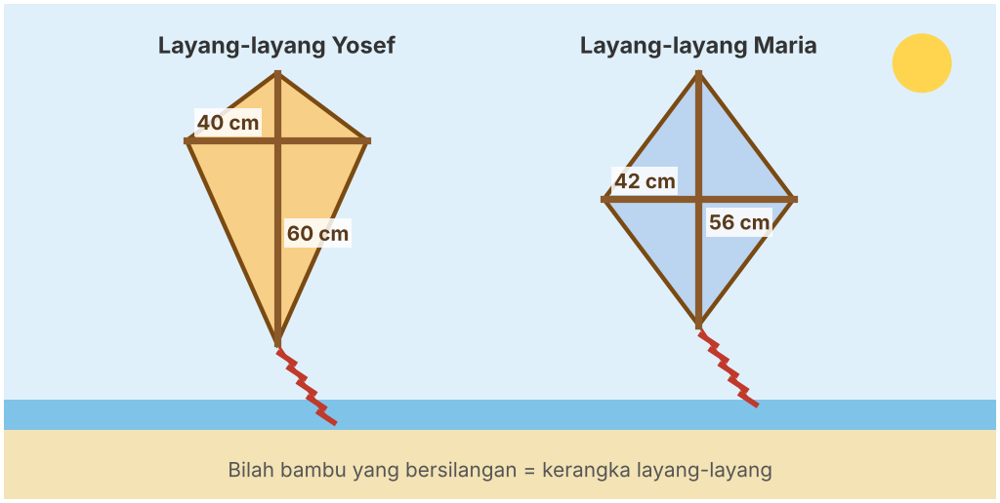
Gambar 1.4.2 Layang-layang buatan Yosef dan Maria dengan kerangka
bilah bambu
❓Masalah Kita
a. Berapa cm² kertas yang menutupi layang-layang
Yosef dan layang-layang Maria?
b. Layang-layang siapa yang lebih luas? Berapa cm²
selisihnya?
c. Apakah luas selembar kertas minyak itu cukup
untuk menutup kedua layang-layang? Berapa cm² sisanya?
1. Tuliskan yang diketahui dan yang ditanyakan.
🧩 PM1
Kegiatan2
Ayo
Kumpulkan Informasi
Sintaks PBM 2 · Mengorganisasikan siswa untuk
belajar
Bentuklah kelompok 4–5 orang. Bagi peran: pengukur/pembaca
gambar, pencatat, penghitung,
dan juru bicara. Seperti para penari Gawi yang
bergandengan tangan, setiap anggota kelompok penting untuk menyelesaikan
masalah bersama.
✂️Ayo Temukan Rumus 5: Luas Belah Ketupat dan Layang-Layang
Belah ketupat
Cara 1: Memotong satu belah ketupat menurut
diagonalnya
1. Gambarlah sebuah belah ketupat dengan diagonal 1 (d₁) = 6 satuan
dan diagonal 2 (d₂) = 4 satuan pada kertas berpetak, lalu
guntinglah.
2. Potonglah menurut d₁ sehingga menjadi dua segitiga. Segitiga atas
adalah potongan besar.
3. Potonglah segitiga bawah menurut d₂ sehingga menjadi dua segitiga
kecil.
4. Pindahkan kedua segitiga kecil ke sisi kiri atas dan kanan atas
potongan besar seperti Gambar 1.4.3. Bangun apa yang terbentuk?
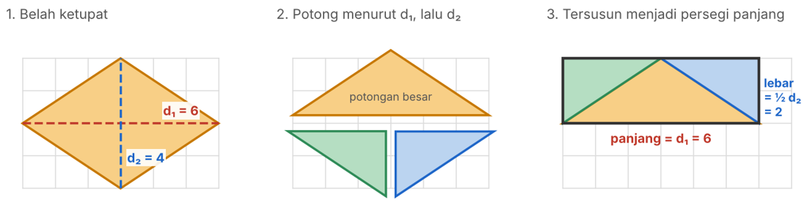
Gambar 1.4.3 Belah ketupat dipotong menurut diagonal lalu disusun
menjadi persegi panjang
5. Panjang persegi panjang = = satuan, dan lebar persegi
panjang = ½ × = satuan.
6. Luas belah ketupat = luas persegi panjang = p × l = × = persegi satuan. 🔗 K1
Kesimpulan: Luas belah ketupat = d₁ × ½ d₂ = ½ ×
×
▶
Video Animasi
Luas Belah Ketupat – Cara 1: Memotong menurut
diagonal
Video segera ditambahkan oleh guru.
Cara 2: Menggunakan dua belah ketupat yang
kongruen
1. Gambarlah dua belah ketupat yang kongruen (A dan B) dengan
diagonal a (d₁) = 6 satuan dan diagonal b (d₂) = 4 satuan, lalu
guntinglah.
2. Hitunglah jumlah petak pada belah ketupat Apetak.
3. Potonglah belah ketupat A menurut kedua garis diagonalnya sehingga
menjadi 4 segitiga.
4. Tempelkan keempat potongan itu pada belah ketupat B sehingga
terbentuk persegi panjang seperti Gambar 1.4.4.
5. Dua belah ketupat yang kongruen sekarang berubah menjadi satu
6. Diagonal a (d₁) belah ketupat menjadi sisi persegi panjang,
dan diagonal b (d₂) menjadi sisi persegi panjang.
7. Karena rumus luas persegi panjang = , maka luas dua belah
ketupat = ×
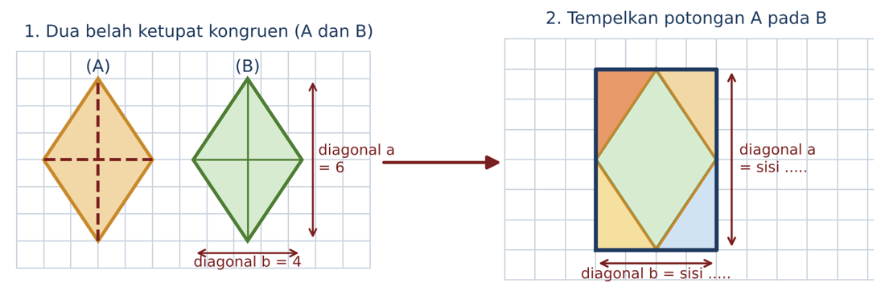
Gambar 1.4.4 Potongan belah ketupat A ditempelkan pada belah
ketupat B membentuk persegi panjang
Kesimpulan: Luas satu belah ketupat = × d₁ ×
d₂. Apakah sama dengan hasil Cara 1?
▶
Video Animasi
Luas Belah Ketupat – Cara 2: Dua belah ketupat yang
kongruen
Video segera ditambahkan oleh guru.
Layang-layang
Cara 1: Memotong satu layang-layang menurut
diagonalnya
1. Gambarlah sebuah layang-layang dengan diagonal 1 (d₁) = 6 satuan
dan diagonal 2 (d₂) = 4 satuan pada kertas berpetak, lalu
guntinglah.
2. Potonglah menurut d₁ sehingga menjadi dua segitiga yang sama. Satu
segitiga adalah potongan besar.
3. Potonglah segitiga yang lain menurut d₂ sehingga menjadi dua
segitiga kecil.
4. Pindahkan kedua segitiga kecil ke samping potongan besar seperti
Gambar 1.4.5 sehingga terbentuk persegi panjang.
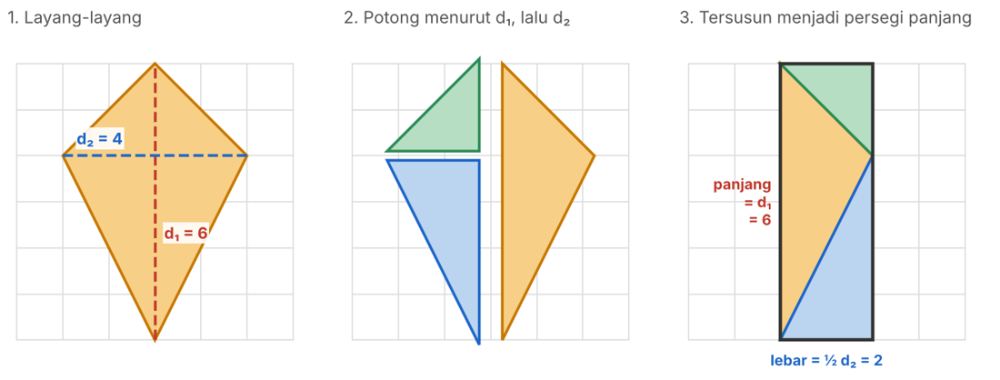
Gambar 1.4.5 Layang-layang dipotong menurut diagonal lalu disusun
menjadi persegi panjang
5. Panjang persegi panjang = = satuan, dan lebar persegi
panjang = ½ × = satuan.
6. Luas layang-layang = luas persegi panjang = × = persegi satuan. 🔗 K1
Kesimpulan: Luas layang-layang = d₁ × ½ d₂ = ½ ×
× Bandingkan dengan rumus luas belah ketupat!
▶
Video Animasi
Luas Layang-Layang – Cara 1: Memotong menurut
diagonal
Video segera ditambahkan oleh guru.
Cara 2: Menggunakan dua layang-layang yang
kongruen
1. Gambarlah dua layang-layang yang kongruen (A dan B) dengan
diagonal a (d₁) = 5 satuan dan diagonal b (d₂) = 4 satuan, lalu
guntinglah.
2. Hitunglah jumlah petak pada layang-layang A, lalu potonglah
menurut kedua diagonalnya.
3. Tempelkan potongan-potongan itu pada layang-layang B sehingga
terbentuk persegi panjang seperti Gambar 1.4.6.
4. Diagonal a (d₁) menjadi sisi dan diagonal b (d₂) menjadi
sisi persegi panjang.
5. Luas dua layang-layang = × Jadi, luas satu
layang-layang = × ×
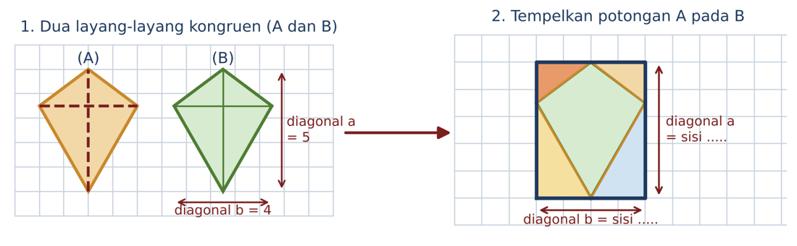
Gambar 1.4.6 Potongan layang-layang A ditempelkan pada
layang-layang B membentuk persegi panjang
▶
Video Animasi
Luas Layang-Layang – Cara 2: Dua layang-layang yang
kongruen
Video segera ditambahkan oleh guru.
💡Info Penting
Diagonal adalah ruas garis yang menghubungkan dua
titik sudut yang berhadapan. Pada belah ketupat dan layang-layang, kedua
diagonal saling tegak lurus. Karena keduanya dapat
disusun ulang menjadi persegi panjang dengan panjang d₁ dan lebar ½ d₂,
rumus luasnya sama: L = ½ × d₁ × d₂. Bilah bambu pada
kerangka layang-layang adalah diagonalnya. 🔗 K1
🏝️Jelajah Budaya Ende: Ketupat Berbentuk Belah Ketupat
Ketupat adalah makanan dari beras yang dimasak di
dalam anyaman janur (daun kelapa muda). Di Kota Ende,
ketupat biasa disajikan saat Lebaran dan acara kebersamaan keluarga,
lalu dibagikan kepada kerabat dan tetangga. Jika dilihat dari depan,
ketupat berbentuk belah ketupat. Dari makanan inilah
nama bangun datar belah ketupat berasal. 🔗 K3
Perhatikan kembali Gambar 1.4.1. Ketupat yang dibelah tampak seperti
dua segitiga. Hal ini sama dengan cara kita menemukan rumus luas: belah
ketupat dipotong menurut diagonalnya menjadi segitiga-segitiga.
🔗 K1
1. Tampak depan sebuah ketupat berbentuk belah ketupat dengan
diagonal 12 cm dan 10 cm. Berapa cm² luas tampak depan ketupat itu?
🧩 PM3
2. Ibu menganyam 8 ketupat yang sama besar seperti soal nomor 1.
Berapa cm² luas tampak depan seluruh ketupat? Tuliskan rencanamu lebih
dahulu. 🧩 PM2
Bangun
Asal rumus
Luas (L)
Belah ketupat
Dipotong menurut diagonal lalu disusun → persegi panjang dengan
panjang d₁ dan lebar ½ d₂
L = ½ × d₁ × d₂
Layang-layang
Sama seperti belah ketupat → persegi panjang dengan panjang d₁ dan
lebar ½ d₂
L = ½ × d₁ × d₂
📘Ayo Pelajari Contoh
Contoh 1. Belah ketupat ABCD memiliki diagonal AC =
14 cm dan BD = 14 cm. Hitunglah luasnya!
Penyelesaian:
Luas belah ketupat ABCD = ½ × AC × BD
= ½ × 14 cm × 14 cm
= 7 cm × 14 cm
= 98 cm²
Contoh 2. Panjang kedua diagonal sebuah belah
ketupat adalah 22 cm. Hitunglah luasnya!
Penyelesaian:
Luas belah ketupat = ½ × d₁ × d₂
= ½ × 22 cm × 22 cm
= 11 cm × 22 cm
= 242 cm²
Contoh 3. Layang-layang PQRS memiliki diagonal PR =
8 cm dan QS = 12 cm. Hitunglah luasnya!
Penyelesaian:
Luas layang-layang PQRS = ½ × PR × QS
= ½ × 8 cm × 12 cm
= 4 cm × 12 cm
= 48 cm²
Contoh 4. Panjang diagonal-diagonal sebuah
layang-layang adalah 16 cm dan 20 cm. Hitunglah luasnya!
Penyelesaian:
Luas layang-layang = ½ × d₁ × d₂
= ½ × 16 cm × 20 cm
= 8 cm × 20 cm
= 160 cm²
1. Mengapa rumus luas belah ketupat dan layang-layang sama?
🔗 K1
2. Pada layang-layang Yosef, bilah bambu mana yang menjadi d₁ dan
mana yang menjadi d₂? 🧩 PM1
3. Tuliskan rencana penyelesaian masalah layang-layang Yosef dan
Maria. 🧩 PM2
Kegiatan3
Ayo
Selidiki dan Hitung
Sintaks PBM 3 · Membimbing penyelidikan individu dan
kelompok
Lengkapi tabel berikut. 🧩 PM3
Layang-layang
Bentuk
Perhitungan
Luas (cm²)
Yosef
Layang-layang
½ × 60 ×
Maria
Belah ketupat
½ × ×
Jumlah
+
b. Layang-layang yang lebih luas adalah milik , karena cm²
> cm². Selisihnya = − = cm².
🧩 PM3
c. Luas kertas minyak = 70 cm × 50 cm = cm². Luas kedua
layang-layang = cm². Kertas itu (cukup/tidak cukup), dan
sisanya cm². 🔗 K1
🏆Tantangan Kelompok
Kak Ardi ingin membuat layang-layang berbentuk belah ketupat yang
luasnya 1.200 cm². Satu bilah bambunya sudah dipotong 60 cm. Berapa cm
panjang bilah bambu yang lain?
Kegiatan4
Ayo
Sajikan Temuanmu
Sintaks PBM 4 · Mengembangkan dan menyajikan hasil
karya
Buatlah layang-layang mini dari dua batang lidi dan kertas. Ukur
panjang kedua lidi, hitung luas kertas yang diperlukan, lalu tunjukkan
dengan menggunting dan menyusun ulang kertasnya menjadi persegi panjang.
Presentasikan hasil Kegiatan 3 di depan kelas.
1. Layang-layang dapat terbang karena didorong angin. Kaitkan dengan
pelajaran IPAS: mengapa layang-layang yang permukaannya lebih luas lebih
mudah ditiup angin? 🔗 K2
Kegiatan5
Ayo
Periksa dan Refleksikan
Sintaks PBM 5 · Menganalisis dan mengevaluasi proses pemecahan
masalah
Periksa luas layang-layang Yosef dengan cara lain: potong menurut
bilah 60 cm menjadi dua segitiga yang sama, masing-masing beralas 60 cm
dan bertinggi 20 cm. Hitung 2 × ½ × 60 × 20. Apakah hasilnya sama?
🧩 PM4
Periksa: apakah kamu sudah mengalikan dengan ½? Luas
layang-layang selalu setengah dari luas persegi panjang d₁ × d₂ yang
mengelilinginya. 🧩 PM4
⚠️Awas, Keliru!
Seorang siswa menghitung luas layang-layang Yosef = 60 × 40 = 2.400
cm². Apa yang terlupa?
🪞Refleksiku
Mengapa luas belah ketupat dan layang-layang harus dibagi 2
(dikalikan ½)? Jelaskan dengan kata-katamu sendiri.
Bagian mana yang paling mudah dan paling sulit bagimu hari ini?
Mengapa?
🏝️Jelajah Budaya Ende: Motif Belah Ketupat pada Tenun
Banyak kain tenun ikat Ende Lio memiliki motif belah
ketupat yang tersusun rapat dan berulang. Penenun perlu
merencanakan ukuran motif sebelum mengikat dan mencelup benang.
🔗 K3
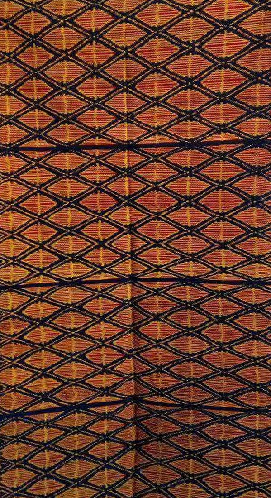
Gambar 1.4.7 Kain tenun ikat dengan motif belah ketupat yang
berulang
1. Dalam cerita ini, satu motif belah ketupat memiliki diagonal
mendatar 10 cm dan diagonal tegak 6 cm. Berapa cm² luas satu motif?
🧩 PM3
2. Setiap baris memuat 7 motif dan kain itu memuat 12 baris motif.
Berapa cm² luas seluruh motif belah ketupat? Tuliskan rencanamu lebih
dahulu. 🧩 PM2
3. Pada pelajaran Seni Rupa, rancanglah sebuah motif belah ketupat
pada kertas berpetak. Berapa petak luas motif rancanganmu?
🔗 K2
⭐ Latihan
Mandiri
1. Sebuah belah ketupat memiliki diagonal 16 cm dan 10 cm. Hitunglah
luasnya!
2. Sebuah layang-layang memiliki diagonal 24 cm dan 15 cm. Berapa
luasnya?
3. Luas sebuah belah ketupat 150 cm² dan salah satu diagonalnya 20
cm. Berapa panjang diagonal yang lain?
Bagian 5
Luas Daerah Bangun Gabungan
🎯Tujuan Pembelajaran Bagian Ini
1. Memecah bangun gabungan menjadi bangun-bangun dasar dengan garis
bantu.
2. Menentukan luas bangun gabungan dengan menjumlahkan atau
mengurangkan luas bangun dasar.
3. Memecahkan masalah biaya yang berkaitan dengan luas bangun
gabungan.
💭Mari Berpikir Dulu
🔗Pertanyaan pemantik koneksi
Sebuah taman tersusun atas beberapa bangun datar. Apakah luas
taman sama dengan jumlah luas setiap bangun penyusunnya?
🔗 K1
Mengapa pengelola taman di tempat bersejarah perlu menghitung
luas taman sebelum menanam rumput? 🔗 K3
🧩Pertanyaan pemantik pemecahan masalah
Di mana sebaiknya garis bantu ditarik agar bangun gabungan
terpecah menjadi bangun yang mudah dihitung?
🧩 PM2
▶
Ayo Tonton Video
Rumah Pengasingan Bung Karno di Kota Ende
Video segera ditambahkan oleh guru.
Kegiatan1
Ayo
Kenali Masalah
Sintaks PBM 1 · Orientasi siswa pada masalah
Di Kota Ende terdapat Rumah Pengasingan Bung Karno,
rumah yang ditempati Bung Karno dan keluarganya selama masa pengasingan
pada tahun 1934–1938. Kini rumah itu menjadi situs sejarah yang
dikunjungi pelajar dan wisatawan.
Dalam cerita ini, pengelola ingin menanami rumput sebuah taman di
halaman rumah tersebut. Denah taman yang disederhanakan berbentuk
gabungan persegi panjang (12 m × 8 m) dan trapesium (sisi sejajar 12 m
dan 8 m, tinggi 5 m). Di tengah taman terdapat kolam persegi berukuran 2
m × 2 m yang tidak ditanami rumput. Harga rumput beserta penanamannya
Rp20.000 per m².
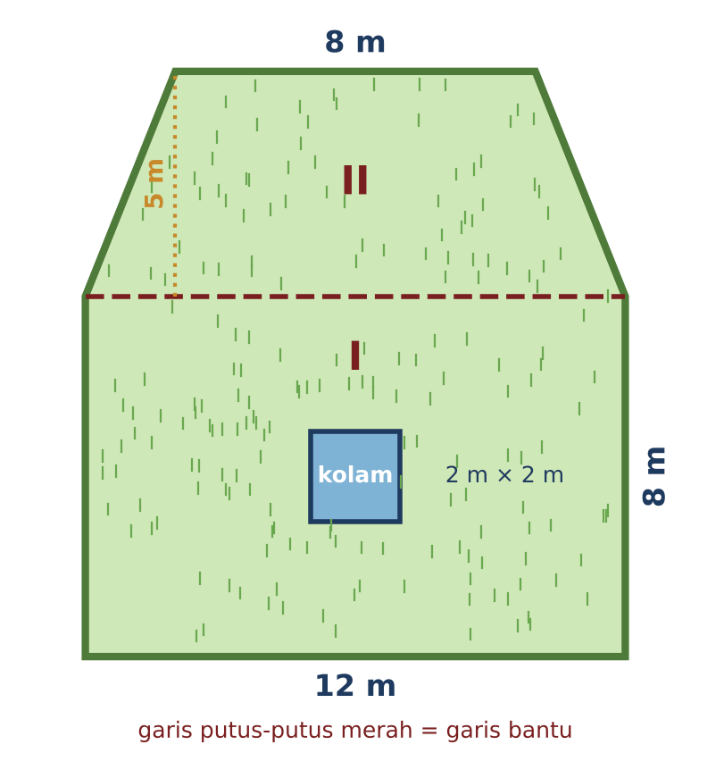
Gambar 1.5.1 Denah taman di halaman Rumah Pengasingan Bung Karno
(disederhanakan, ukuran rekaan)
❓Masalah Kita
a. Berapa m² luas seluruh taman (termasuk
kolam)?
b. Berapa m² luas daerah yang ditanami rumput?
c. Berapa biaya untuk menanam rumput?
1. Tuliskan yang diketahui dan yang ditanyakan.
🧩 PM1
Kegiatan2
Ayo
Kumpulkan Informasi
Sintaks PBM 2 · Mengorganisasikan siswa untuk
belajar
Bentuklah kelompok 4–5 orang. Bagi peran: pengukur/pembaca
gambar, pencatat, penghitung,
dan juru bicara. Seperti para penari Gawi yang
bergandengan tangan, setiap anggota kelompok penting untuk menyelesaikan
masalah bersama.
💡Info Penting
Langkah menghitung luas bangun gabungan:
1) Tarik garis bantu (garis putus-putus) untuk
memecah bangun menjadi bangun dasar: persegi, persegi panjang, segitiga,
trapesium, dan sebagainya.
2) Tentukan ukuran setiap bangun dasar (alas, tinggi, panjang,
lebar).
3) Hitung luas setiap bagian, lalu jumlahkan.
4) Jika ada bagian yang berlubang atau tidak termasuk (misalnya
kolam), kurangkan luasnya.
1. Mengapa luas bangun gabungan dapat dihitung dengan menjumlahkan
luas setiap bagiannya? Kapan kita perlu mengurangkan luas?
🔗 K1
2. Coba cari cara lain menarik garis bantu pada denah taman. Apakah
hasil luasnya akan berubah? 🧩 PM2
Kegiatan3
Ayo
Selidiki dan Hitung
Sintaks PBM 3 · Membimbing penyelidikan individu dan
kelompok
Lengkapi tabel berikut. 🧩 PM3
Bagian
Bentuk
Perhitungan
Luas (m²)
I
Persegi panjang
12 ×
II
Trapesium
½ × (12 + ) ×
Luas taman
I + II = +
Kolam
Persegi
2 × 2
Daerah berumput
−
c. Biaya = m² × Rp20.000 = Rp 🔗 K2
🏆Tantangan Kelompok
Pengelola juga ingin mengecat sebuah dinding pagar berbentuk persegi
panjang 10 m × 2 m. Pada dinding itu terdapat pintu gerbang 3 m × 2 m
yang tidak dicat. Berapa m² dinding yang dicat?
Kegiatan4
Ayo
Sajikan Temuanmu
Sintaks PBM 4 · Mengembangkan dan menyajikan hasil
karya
Gambar ulang denah taman di karton. Tarik garis bantu dengan warna
merah, warnai setiap bagian dengan warna berbeda, dan tuliskan
perhitungannya. Bandingkan cara kelompokmu dengan kelompok lain.
1. Mengapa situs sejarah seperti Rumah Pengasingan Bung Karno perlu
dirawat? Kaitkan dengan pelajaran Pendidikan Pancasila.
🔗 K2
Kegiatan5
Ayo
Periksa dan Refleksikan
Sintaks PBM 5 · Menganalisis dan mengevaluasi proses pemecahan
masalah
Periksa: apakah daerah berumput lebih kecil daripada luas seluruh
taman? Mengapa harus begitu?
🧩 PM4
Periksa ukuran tinggi trapesium: apakah kamu memakai 5 m, bukan
13 m? 🧩 PM4
⚠️Awas, Keliru!
Seorang siswa menjawab biaya = 146 × Rp20.000, padahal kolam tidak
ditanami rumput. Bagaimana seharusnya?
🪞Refleksiku
Kapan kita menjumlahkan luas dan kapan kita mengurangkan luas
pada bangun gabungan?
Bagian mana yang paling mudah dan paling sulit bagimu hari ini?
Mengapa?
🏝️Jelajah Budaya Ende: Kampung Adat Wologai
Kampung Adat Wologai di Kecamatan Detusoko, Kabupaten Ende, memiliki
rumah-rumah adat (sa’o) beratap tinggi yang tersusun
mengelilingi pelataran adat (kanga). Jika dilihat dari
depan, bentuk rumah adat dapat disederhanakan menjadi gabungan bangun
datar. 🔗 K3
Gambar 1.5.2 Kampung Adat Wologai di Kabupaten Ende
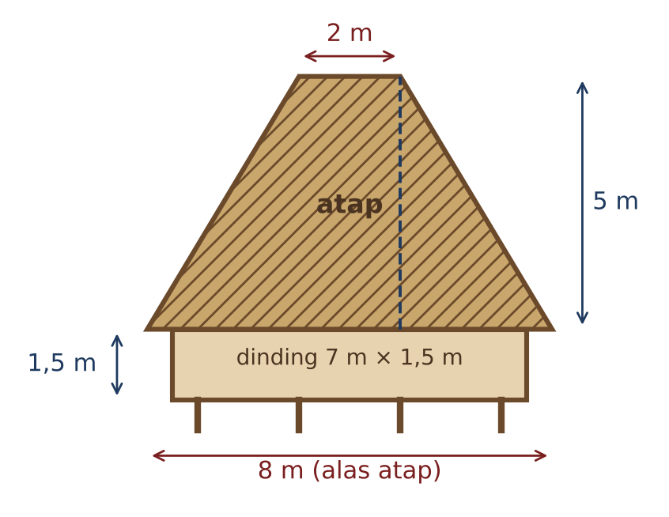
Gambar 1.5.3 Tampak depan rumah adat (disederhanakan, ukuran
rekaan)
1. Bangun datar apa saja yang menyusun tampak depan rumah adat pada
Gambar 1.5.3? 🔗 K1
2. Hitunglah luas atap dan luas dinding, lalu tentukan luas seluruh
tampak depan rumah adat itu. 🧩 PM3
3. Dalam cerita ini, pelataran adat berbentuk persegi panjang
berukuran 30 m × 20 m. Di tengahnya terdapat susunan batu adat yang
menempati daerah 4 m × 3 m. Berapa m² daerah pelataran yang dapat
dipakai untuk menari Gawi? 🧩 PM3
🏝️Jelajah Budaya Ende: Wadah Anyaman Berbentuk Segi Banyak
Masyarakat Ende menganyam daun menjadi wadah untuk menyimpan berbagai
barang. Tutup wadah anyaman ini berbentuk segi banyak,
dan permukaannya tersusun dari potongan-potongan anyaman berbentuk
belah ketupat yang tampak seperti kubus.
🔗 K3
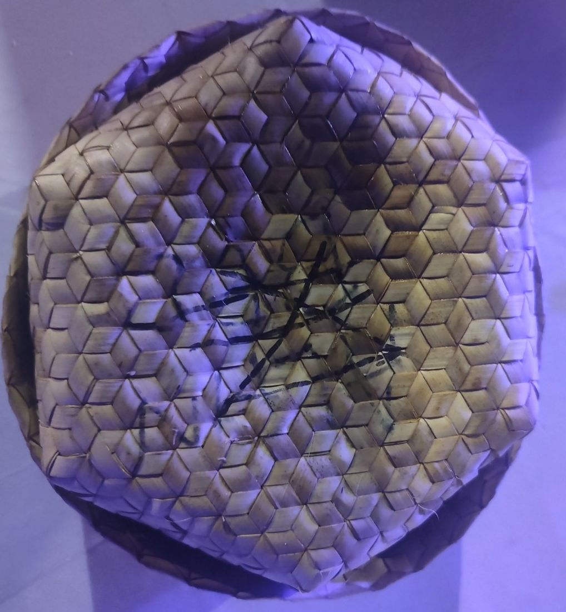
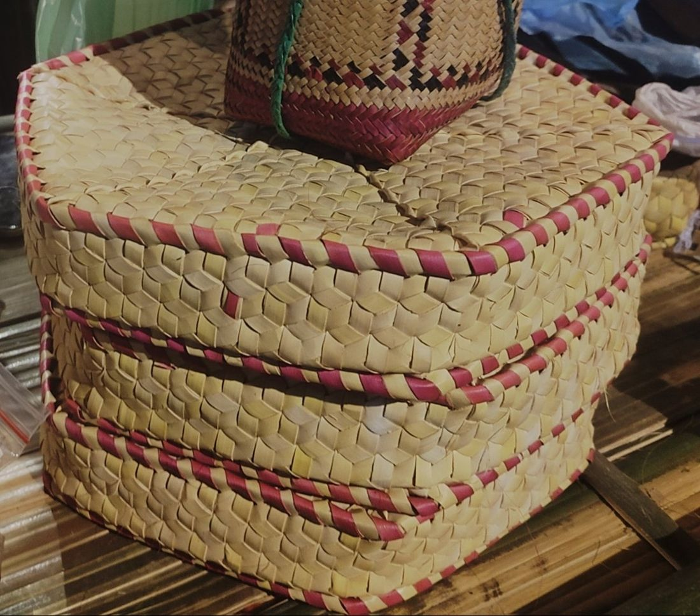
Gambar 1.5.4 Tutup wadah anyaman dilihat dari atas (kiri) dan
wadah anyaman bersusun (kanan)
1. Perhatikan tutup wadah pada Gambar 1.5.4 (kiri). Berapa banyak
sisi tutup wadah itu? Disebut bangun apakah bentuk tersebut? 🔗 K1
2. Dalam cerita ini, tutup wadah berbentuk segi enam dengan panjang
sisi 20 cm. Segi enam itu dapat dibagi menjadi 6 segitiga yang sama
besar seperti Gambar 1.5.5 (Cara 1). Jika tinggi setiap segitiga 17 cm,
berapa cm² luas tutup wadah itu? 🧩 PM3
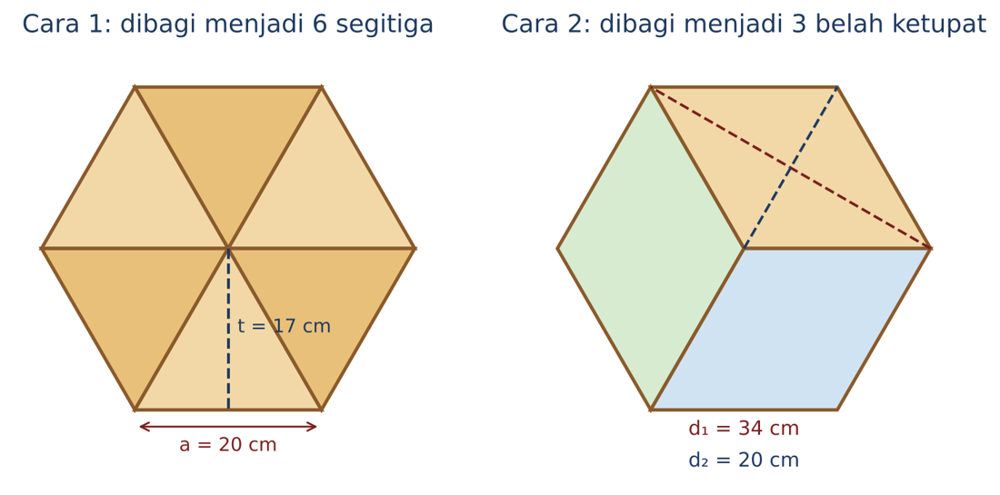
Gambar 1.5.5 Dua cara membagi segi enam: menjadi 6 segitiga atau
3 belah ketupat
3. Segi enam yang sama juga dapat dibagi menjadi 3 belah ketupat yang
sama besar (Cara 2). Diagonal setiap belah ketupat adalah 34 cm dan 20
cm. Berapa cm² luas tutup wadah dengan cara ini? 🧩 PM3
4. Bandingkan hasil Cara 1 dan Cara 2. Apakah hasilnya sama? Mengapa
pola anyaman belah ketupat dapat menutupi tutup segi enam dengan rapat?
🔗 K1
⭐ Latihan
Mandiri
1. Sebuah bangun tersusun atas persegi dengan sisi 8 cm dan segitiga
dengan alas 8 cm dan tinggi 5 cm yang menempel di atasnya. Hitunglah
luas bangun itu!
2. Sebuah papan berbentuk huruf L tersusun atas persegi panjang 10 cm
× 4 cm dan persegi panjang 6 cm × 4 cm yang tidak saling bertumpuk.
Berapa luas papan itu?
3. Dinding berukuran 5 m × 3 m akan dicat. Pada dinding terdapat
jendela berukuran 2 m × 1 m. Berapa m² dinding yang dicat?
Pengayaan
Menemukan Rumus Luas Lingkaran
Bagian ini adalah pengayaan bagi kamu yang menyukai
tantangan. Materi ini di luar cakupan penelitian dan tidak diujikan
dalam tes. Lingkaran tidak memiliki sisi lurus, tetapi rumus luasnya
juga dapat ditemukan dengan menyusun ulang lingkaran menjadi bangun yang
mirip persegi panjang.
✂️Ayo Temukan Rumus: Luas Lingkaran
1. Gambarlah sebuah lingkaran menggunakan jangka dengan jari-jari (r)
sembarang, lalu guntinglah.
2. Buatlah 2 garis tengah sehingga lingkaran terbagi menjadi 4 juring
sama besar. Bagilah salah satu juring menjadi dua sama besar.
3. Berilah warna yang berbeda untuk setiap ½ lingkaran, misalnya
merah dan kuning.
4. Potonglah menurut garis jari-jari, lalu susunlah juring-juring itu
berselang-seling (atas-bawah), diawali dan diakhiri dengan juring yang
kecil.
5. Ulangi dengan lingkaran yang dibagi menjadi 8 juring, lalu 16
juring. Bayangkan pula jika lingkaran dibagi menjadi 32 juring (Gambar
P.1).
6. Bandingkan susunan pertama, kedua, ketiga, dan keempat. Apa yang
kamu amati?
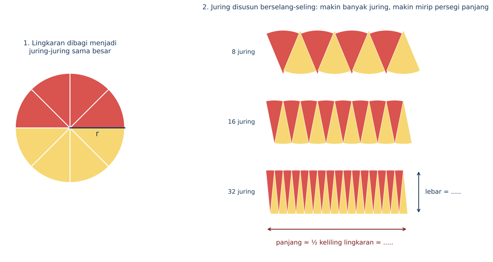
Gambar P.1 Juring-juring lingkaran disusun menyerupai persegi
panjang
7. Sekarang susunan juring sudah menyerupai
8. Sisi panjang susunan itu sebenarnya adalah dari keliling
lingkaran, dan sisi lebarnya adalah lingkaran.
9. Karena keliling lingkaran adalah 2 × π × r, maka ½ dari keliling
lingkaran = atau
10. Luas susunan juring yang serupa persegi panjang = panjang × lebar
= ×
Kesimpulan: Rumus luas lingkaran adalah L = ×
× = π × r².
▶
Video Animasi
Luas Lingkaran
Video segera ditambahkan oleh guru.
🏝️Jelajah Budaya Ende: Lingkaran di Sekitar Kita
Lingkaran dapat kita temukan dalam budaya Ende, misalnya saat warga
menari Gawi. Para penari bergandengan tangan dan
bergerak membentuk lingkaran besar. 🔗 K3
Gambar P.2 Tarian Gawi yang membentuk lingkaran
1. Dalam cerita ini, para penari Gawi membentuk lingkaran dengan
jari-jari 7 m. Berapa m² luas daerah di dalam lingkaran penari? (Gunakan
π = 22/7.) 🧩 PM3
2. Jika jari-jari lingkaran penari Gawi dibuat 2 kali lipat, apakah
luas daerahnya juga menjadi 2 kali lipat? Selidikilah! 🧩 PM4
Rangkuman
Luas daerah adalah ukuran besarnya permukaan di
dalam garis tepi bangun datar, yaitu banyaknya persegi satuan yang
menutupinya. Satuannya adalah satuan luas (cm², m²); 1 m² = 10.000
cm².
Luas persegi = s × s; persegi panjang = p × l; segitiga = ½ × a ×
t (tinggi selalu tegak lurus alas).
Luas jajar genjang = a × t; trapesium = ½ × (a + b) × t; belah
ketupat dan layang-layang = ½ × d₁ × d₂.
Luas bangun gabungan dihitung dengan memecahnya memakai garis
bantu, menjumlahkan luas setiap bagian, dan mengurangkan bagian yang
berlubang.
Rumus-rumus luas dapat ditemukan sendiri dengan
memotong dan menyusun ulang bangun: segitiga, jajar genjang, trapesium,
belah ketupat, dan layang-layang diubah menjadi persegi panjang;
trapesium dan segitiga juga dapat diubah menjadi jajar genjang.
🪞 Refleksi
Diri
Pernyataan
Sudah
Belum
Saya dapat menjelaskan arti luas daerah dengan kalimat sendiri.
Saya dapat menghitung luas persegi, persegi panjang, dan
segitiga.
Saya dapat menjelaskan asal-usul rumus luas jajar genjang dan
trapesium.
Saya dapat menghitung luas belah ketupat dan layang-layang.
Saya dapat menghitung luas bangun gabungan dengan garis bantu.
Saya dapat menemukan rumus luas dengan menggunting dan menyusun
ulang bangun.
Saya dapat mengaitkan luas dengan budaya Ende dan pelajaran
lain.
Kunci Jawaban Latihan Mandiri
Kerjakan latihan mandiri lebih dahulu, baru cocokkan jawabanmu dengan
kunci berikut. Jika jawabanmu berbeda, periksa kembali langkah-langkah
penyelesaianmu.
🔑 Bagian 1 Apakah Luas Daerah Itu?
No.
Penyelesaian
Jawaban
1
Banyak ubin = 9 × 7 = 63
63 ubin
2
Luas satu ubin = 20 cm × 20 cm = 400 cm²
Luas lantai = 63 × 400 cm² = 25.200 cm²
25.200 cm²
3
Cari dua bilangan yang hasil kalinya 12:
1 × 12 = 12; 2 × 6 = 12; 3 × 4 = 12
1 × 12, 2 × 6, dan 3 × 4 petak
🔑 Bagian 2 Luas Persegi, Persegi Panjang, dan
Segitiga
No.
Penyelesaian
Jawaban
1
L = s × s = 15 cm × 15 cm
225 cm²
2
L = ½ × a × t = ½ × 14 cm × 9 cm = 7 cm × 9 cm
63 cm²
3
L = p × l, sehingga 96 = 12 × l
l = 96 : 12
8 cm
🔑 Bagian 3 Luas Jajar Genjang dan Trapesium
No.
Penyelesaian
Jawaban
1
L = a × t = 15 cm × 8 cm
120 cm²
2
L = ½ × (a + b) × t = ½ × (20 cm + 12 cm) × 7 cm
= ½ × 32 cm × 7 cm = 16 cm × 7 cm
112 cm²
3
L = a × t, sehingga 84 = 12 × t
t = 84 : 12
7 cm
🔑 Bagian 4 Luas Belah Ketupat dan Layang-Layang
No.
Penyelesaian
Jawaban
1
L = ½ × d₁ × d₂ = ½ × 16 cm × 10 cm = 8 cm × 10 cm
80 cm²
2
L = ½ × d₁ × d₂ = ½ × 24 cm × 15 cm = 12 cm × 15 cm
180 cm²
3
L = ½ × d₁ × d₂, sehingga 150 = ½ × 20 × d₂
150 = 10 × d₂, maka d₂ = 150 : 10
15 cm
🔑 Bagian 5 Luas Daerah Bangun Gabungan
No.
Penyelesaian
Jawaban
1
L persegi = 8 cm × 8 cm = 64 cm²
L segitiga = ½ × 8 cm × 5 cm = 20 cm²
L bangun = 64 cm² + 20 cm²
84 cm²
2
L persegi panjang 1 = 10 cm × 4 cm = 40 cm²
L persegi panjang 2 = 6 cm × 4 cm = 24 cm²
L papan = 40 cm² + 24 cm²
64 cm²
3
L dinding = 5 m × 3 m = 15 m²
L jendela = 2 m × 1 m = 2 m²
L yang dicat = 15 m² − 2 m²
13 m²
🔑 Pengayaan Menemukan Rumus Luas Lingkaran
No.
Penyelesaian
Jawaban
1
L = π × r × r = 22/7 × 7 m × 7 m = 22 × 7 m²
154 m²
2
Jari-jari 2 kali lipat: r = 14 m
L = 22/7 × 14 m × 14 m = 616 m²
616 : 154 = 4
Tidak. Luasnya menjadi 4 kali lipat
Daftar Istilah
Istilah
Arti
Bangun gabungan
Bangun datar yang tersusun atas dua bangun datar atau lebih
Belah ketupat
Segi empat dengan keempat sisi sama panjang dan sudut-sudutnya tidak
siku-siku
Diagonal
Ruas garis yang menghubungkan dua titik sudut yang tidak
bersebelahan
Garis bantu
Garis putus-putus yang dibuat untuk memecah bangun gabungan menjadi
bangun dasar
Gawi
Tarian massal suku Lio; penari bergandengan tangan dan bergerak
bersama dalam barisan berputar
Jajar genjang
Segi empat dengan dua pasang sisi sejajar yang sama panjang
Juring
Daerah lingkaran yang dibatasi oleh dua jari-jari dan sebuah
busur
Kanga
Pelataran upacara adat di tengah kampung adat Lio
Keliling
Panjang seluruh garis tepi (sisi terluar) bangun datar
Koneksi matematika
Kemampuan menghubungkan konsep matematika dengan konsep lain, bidang
ilmu lain, dan kehidupan sehari-hari
Kongruen
Sama bentuk dan sama ukurannya sehingga dapat saling menutupi dengan
tepat
Lawo
Sarung tenun ikat untuk perempuan
Layang-layang
Segi empat dengan dua pasang sisi berdekatan yang sama panjang
Luas daerah
Ukuran besarnya permukaan di dalam garis tepi bangun datar
PBM
Pembelajaran Berbasis Masalah; pembelajaran yang diawali dengan
masalah nyata
Pemecahan masalah
Proses menemukan penyelesaian melalui langkah memahami,
merencanakan, melaksanakan, dan memeriksa kembali
Persegi satuan
Persegi berukuran satu satuan (misalnya 1 cm × 1 cm) yang dipakai
untuk mengukur luas
Satuan luas
Satuan untuk menyatakan luas, misalnya cm² dan m²
Sa’o
Rumah adat suku Lio
Segi banyak
Bangun datar yang dibatasi oleh tiga ruas garis lurus atau lebih,
misalnya segi enam
Sisi
Ruas garis yang membatasi bangun datar
Tegak lurus
Kedudukan dua garis yang berpotongan membentuk sudut siku-siku
Tenun ikat
Kain yang motifnya dibuat dengan mengikat dan mencelup benang
sebelum ditenun
Terasering
Sawah atau lahan bertingkat-tingkat yang dibuat mengikuti lereng
bukit
Tinggi (bangun datar)
Jarak tegak lurus dari alas ke titik puncak atau ke sisi sejajar di
hadapannya
Trapesium
Segi empat yang memiliki tepat sepasang sisi sejajar
Daftar Pustaka
Arends, R. I. (2012). Learning to teach (9th ed.).
McGraw-Hill.
Badan Standar, Kurikulum, dan Asesmen Pendidikan. (2025). Capaian
pembelajaran Kurikulum Merdeka (SK No. 046/H/KR/2025). Kementerian
Pendidikan Dasar dan Menengah.
Bishop, A. J. (1988). Mathematical enculturation: A cultural
perspective on mathematics education. Kluwer Academic
Publishers.
D'Ambrosio, U. (1985). Ethnomathematics and its place in the history
and pedagogy of mathematics. For the Learning of Mathematics,
5(1), 44–48.
Departemen Pendidikan Nasional. (2008). Panduan pengembangan
bahan ajar. Direktorat Pembinaan Sekolah Menengah Atas.
Fitrianawati, M., dkk. (2022). Matematika untuk SD/MI kelas
V. Kementerian Pendidikan, Kebudayaan, Riset, dan Teknologi.
Hmelo-Silver, C. E. (2004). Problem-based learning: What and how do
students learn? Educational Psychology Review, 16(3),
235–266.
National Council of Teachers of Mathematics. (2000). Principles
and standards for school mathematics. NCTM.
Polya, G. (1957). How to solve it: A new aspect of mathematical
method (2nd ed.). Princeton University Press.
Tes Kemampuan Koneksi Matematika
Petunjuk: Kerjakan soal berikut secara mandiri.
Tuliskan konsep yang kamu hubungkan, kalimat matematikanya, langkah
penyelesaian, dan kesimpulan. Waktu: 70 menit.
1. Dina membuat hiasan berbentuk belah ketupat dengan diagonal 12 cm
dan 8 cm. Hiasan itu digambar tepat di dalam sebuah persegi panjang
berukuran 12 cm × 8 cm sehingga keempat ujungnya menyentuh sisi persegi
panjang. (a) Hitung luas persegi panjang dan luas belah ketupat. (b)
Jelaskan hubungan kedua luas itu dan gunakan hubungan tersebut untuk
menjelaskan rumus luas belah ketupat.
2. Bangun A berbentuk persegi panjang berukuran 9 cm × 4 cm,
sedangkan bangun B berbentuk persegi dengan sisi 6 cm. (a) Hitunglah
luas dan keliling kedua bangun. (b) Apakah dua bangun yang luasnya sama
selalu memiliki keliling yang sama? Jelaskan alasanmu.
3. Dalam pelajaran IPAS kamu belajar membaca denah. Sebuah lapangan
desa digambar pada denah berbentuk persegi panjang 8 cm × 6 cm dengan
skala 1 : 500. (a) Berapa ukuran sebenarnya lapangan itu? (b) Berapa
luas lapangan sebenarnya?
4. Dalam pelajaran Seni Rupa, Lia membuat pola hias dari segitiga
yang sama besar (alas 4 cm, tinggi 3 cm). Baris pertama berisi 2
segitiga, dan setiap baris berikutnya bertambah 2 segitiga. Lia membuat
5 baris. (a) Berapa segitiga yang dibuat Lia? (b) Berapa luas seluruh
pola?
5. Saat kerja bakti, halaman sekolah yang berbentuk persegi panjang
18 m × 12 m akan dibersihkan. Setiap siswa membersihkan bagian seluas 9
m². Berapa banyak siswa yang diperlukan?
Tes Kemampuan Pemecahan Masalah Matematika
Petunjuk: Kerjakan soal berikut secara mandiri
dengan langkah: (1) tuliskan yang diketahui dan ditanyakan, (2) tuliskan
rencana penyelesaian, (3) selesaikan, dan (4) periksa kembali jawabanmu.
Waktu: 80 menit.
1. Satu sisi atap sebuah rumah berbentuk trapesium dengan sisi
sejajar 9 m dan 3 m serta tinggi 4 m. Kedua sisi atap berukuran sama dan
akan ditutup seng. Satu lembar seng menutup 0,5 m² dan harganya
Rp45.000. (a) Berapa lembar seng yang diperlukan? (b) Berapa biaya
pembelian seng?
2. Ibu membuat taplak meja berukuran 180 cm × 120 cm yang akan
disulam 4 hiasan belah ketupat dengan diagonal 60 cm dan 40 cm. Ongkos
menyulam Rp2.000 untuk setiap 100 cm². (a) Berapa luas taplak yang tidak
disulam? (b) Berapa ongkos menyulam keempat hiasan?
3. Sebuah taman sekolah berbentuk persegi panjang 28 m × 22 m. Di
dalamnya terdapat kolam berbentuk persegi bersisi 6 m dan gazebo beralas
segitiga dengan alas 4 m dan tinggi 3 m. Sisa taman akan ditanami bunga;
setiap bibit bunga memerlukan lahan 2 m². Paling banyak berapa bibit
bunga yang dapat ditanam?
4. Pak Andi ingin membuat kebun sayur berbentuk persegi panjang
dengan luas 36 m². Panjang dan lebarnya harus bilangan bulat dalam
meter. (a) Tuliskan semua ukuran kebun yang mungkin. (b) Jika lebar
kebun paling sedikit 3 m, ukuran mana saja yang dapat dipilih?
5. Lantai aula sekolah berukuran 12 m × 9 m akan dipasang ubin 30 cm
× 30 cm. Satu dus berisi 10 ubin seharga Rp95.000. Panitia memiliki dana
Rp12.000.000. Apakah dana cukup? Jika cukup, berapa sisanya?
📒 Jawabanku
Kirim berkas CSV (bisa dibuka di Excel) atau teks yang disalin kepada gurumu, misalnya lewat WhatsApp atau Google Classroom.
Hapus semua jawaban?
Semua isian di e-modul ini akan dikosongkan dan tidak dapat dikembalikan.